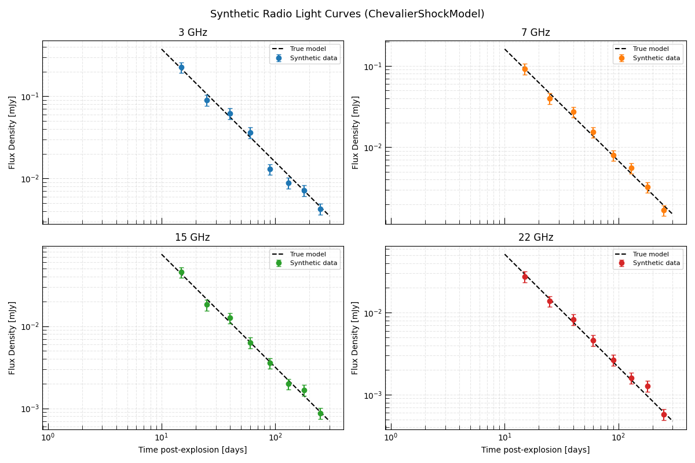
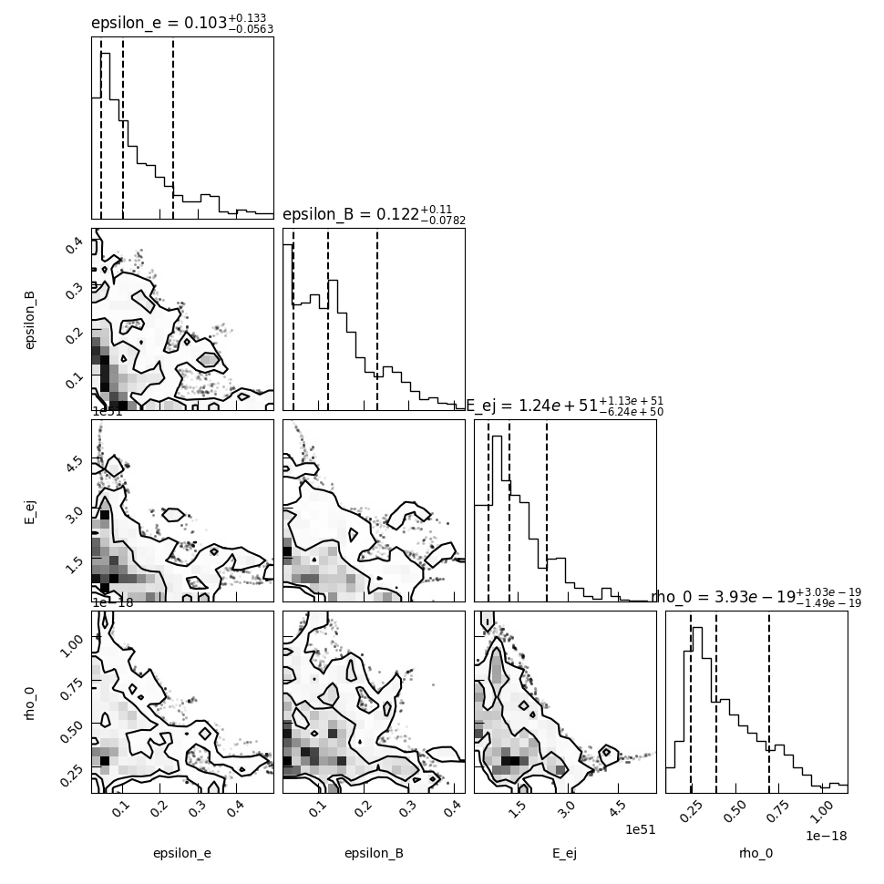
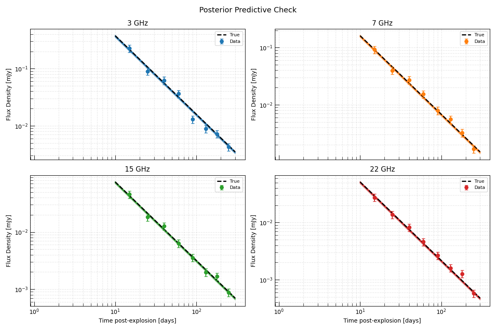

Note
Go to the end to download the full example code.
Inferring Physical Shock Parameters from a Radio Supernova#
This example demonstrates the full science-grade inference workflow for recovering the astrophysical parameters of a radio supernova from multi-frequency radio observations.
The goal is to directly infer the progenitor’s mass-loss history and the supernova’s explosion energy from radio data — parameters that probe the progenitor star decades before the explosion.
The Physical Model#
We use ChevalierShockModel, which
implements the Chevalier (1982) self-similar solution for a supernova shock
expanding into a wind-stratified CSM. The model computes the synchrotron flux
density at a given frequency and time directly from six physical parameters:
Explosion / ejecta parameters:
\(E_{\rm ej}\) — total kinetic energy of the ejecta [erg]
\(M_{\rm ej}\) — ejecta mass [\(M_\odot\)]
\(n\) — outer ejecta density power-law index
CSM parameters (encoding the progenitor wind):
\(\dot{M}\) — progenitor mass-loss rate [\(M_\odot/{\rm yr}\)]
\(v_{\rm w}\) — progenitor wind speed [km/s] (together these give the wind density \(\rho_w \propto \dot{M}/v_w r^{-2}\))
Microphysical parameters:
\(\epsilon_e\) — electron energy fraction
\(\epsilon_B\) — magnetic energy fraction
\(p\) — electron energy distribution power-law index
For this example we fix \(n = 10\) (canonical for Type Ibc supernovae), \(M_{\rm ej} = 2 M_\odot\), and \(p = 3\), and infer the remaining four parameters.
Overview#
Simulate synthetic multi-frequency radio light curves using known true parameter values.
Set up an InferenceProblem with physically motivated priors.
Run MCMC to sample the posterior.
Analyze the results — corner plot, posterior predictive check, and physical interpretation.
Relevant API#
ChevalierShockModelInferenceProblemEmceeSampler
Setup#
import matplotlib.pyplot as plt
import numpy as np
from astropy import units as u
from trilobite.models.supernovae.chevalier_shock import ChevalierShockModel
from trilobite.utils.plot_utils import set_plot_style
set_plot_style()
rng = np.random.default_rng(42)
Define True Parameters and Generate Synthetic Observations#
We simulate observations of a radio-bright Type Ibc supernova at 10 Mpc. The true parameters are chosen to represent a moderate mass-loss rate progenitor, similar to observed events like SN 2011dh or SN 2002ap.
We observe at 4 frequencies spanning VLA bands (3, 7, 15, 22 GHz) and 8 epochs from 10 to 200 days post-explosion.
shock_model = ChevalierShockModel()
# ------ True physical parameters ------
true_params = {
"E_ej": 1.0e51 * u.erg, # Kinetic energy
"M_ej": 2.0 * u.Msun, # Ejecta mass (fixed in inference)
"n": 10.0, # Outer ejecta index (fixed)
"s": 2.0, # CSM power-law index (wind; fixed)
"rho_0": 5e-19 * u.g / u.cm**3, # CSM density at 1e14 cm
"delta": 0.0, # Inner ejecta index (fixed)
"epsilon_e": 0.1, # Electron energy fraction
"epsilon_B": 0.1, # Magnetic energy fraction
"p": 3.0, # Electron index (fixed)
"gamma_min": 1.0,
"gamma_max": 1e7,
"f": 0.5,
"theta": np.pi / 2,
"smoothing_s": -0.5,
"D": 10.0, # Distance in Mpc
}
# Observing setup
frequencies = u.Quantity([3.0, 7.0, 15.0, 22.0], u.GHz)
epochs = u.Quantity([15.0, 25.0, 40.0, 60.0, 90.0, 130.0, 180.0, 250.0], u.day)
noise_frac = 0.15
# Generate synthetic light curves
syn_data = {}
for freq in frequencies:
fluxes_t = []
for t in epochs:
variables = {"frequency": freq.to(u.Hz), "time": t.to(u.s)}
flux = shock_model.forward_model(variables, true_params).flux_density.to(u.mJy)
noise = rng.normal() * noise_frac * flux
fluxes_t.append((flux + noise).to(u.mJy))
syn_data[freq.to_value(u.GHz)] = u.Quantity(fluxes_t)
Visualize the Synthetic Light Curves#
colors = ["C0", "C1", "C2", "C3"]
fig, axes = plt.subplots(2, 2, figsize=(12, 8), sharex=True)
axes = axes.flatten()
t_dense = np.geomspace(10.0, 300.0, 200) * u.day
for ax, (freq, color) in zip(axes, zip(frequencies, colors)):
# True model
true_lc = []
for t in t_dense:
v = {"frequency": freq.to(u.Hz), "time": t.to(u.s)}
true_lc.append(shock_model.forward_model(v, true_params).flux_density.to_value(u.mJy))
ax.loglog(t_dense.to_value(u.day), true_lc, color="black", lw=1.5, ls="--", label="True model")
# Observations
obs = syn_data[freq.to_value(u.GHz)]
errs = noise_frac * obs
ax.errorbar(
epochs.to_value(u.day),
obs.to_value(u.mJy),
yerr=errs.to_value(u.mJy),
fmt="o",
color=color,
capsize=3,
ms=6,
label="Synthetic data",
)
ax.set_title(f"{freq.to_value(u.GHz):.0f} GHz")
ax.set_ylabel("Flux Density [mJy]")
ax.legend(fontsize=8)
ax.grid(True, which="both", ls="--", alpha=0.3)
axes[2].set_xlabel("Time post-explosion [days]")
axes[3].set_xlabel("Time post-explosion [days]")
plt.suptitle("Synthetic Radio Light Curves (ChevalierShockModel)", fontsize=13)
plt.tight_layout()
plt.show()

Set Up the Inference Problem#
We infer four physical parameters:
\(E_{\rm ej}\) — total ejecta kinetic energy [erg], log-uniform prior (scale-free quantity, uncertain over orders of magnitude)
\(\rho_0\) — CSM density at 1e14 cm [g/cm³], log-uniform prior (directly related to mass-loss rate)
\(\epsilon_e\) — electron energy fraction, log-uniform prior (typical range 0.01–0.5)
\(\epsilon_B\) — magnetic energy fraction, log-uniform prior
Log-uniform (Jeffreys) priors are appropriate for scale-free parameters whose order of magnitude is uncertain.
The remaining parameters are fixed at their true values.
from astropy.table import Table, vstack
from trilobite.data import InferenceData
from trilobite.data.photometry import RadioPhotometryEpochContainer
from trilobite.inference import GaussianCensoredLikelihood
from trilobite.inference.likelihood.base import GaussianLikelihood
from trilobite.inference.problem import InferenceProblem
from trilobite.inference.sampling.mcmc import EmceeSampler
# Build a stacked multi-frequency, multi-epoch data table
tables = []
for freq in frequencies:
for i, t in enumerate(epochs):
row = Table()
row["freq"] = [freq.to(u.Hz)]
row["time"] = [t.to(u.s)]
obs_f = syn_data[freq.to_value(u.GHz)][i]
row["flux_density"] = [obs_f]
row["flux_density_error"] = [noise_frac * obs_f]
row["flux_upper_limit"] = [np.nan * u.mJy]
tables.append(row)
data_table = vstack(tables)
photometry = RadioPhotometryEpochContainer(data_table)
inference_data = InferenceData.from_table(
shock_model,
photometry.table,
variables={"frequency": "freq", "time": "time"},
observables={
"flux_density": ("flux_density", "flux_density_error", "flux_upper_limit", None),
},
)
likelihood = GaussianCensoredLikelihood(model=shock_model, data=inference_data)
problem = InferenceProblem(likelihood=likelihood)
# Log-uniform priors on scale-free parameters
problem.set_prior("E_ej", "loguniform", lower=1e49 * u.erg, upper=1e53 * u.erg)
problem.set_prior("rho_0", "loguniform", lower=1e-21 * u.g / u.cm**3, upper=1e-17 * u.g / u.cm**3)
problem.set_prior("epsilon_e", "loguniform", lower=0.01, upper=0.5)
problem.set_prior("epsilon_B", "loguniform", lower=0.01, upper=0.5)
# Set initial values within the prior bounds (required for sampler validation)
problem.parameters["E_ej"].initial_value = 1e51 * u.erg
problem.parameters["rho_0"].initial_value = 5e-19 * u.g / u.cm**3
problem.parameters["epsilon_e"].initial_value = 0.1
problem.parameters["epsilon_B"].initial_value = 0.1
# Fix all other parameters. Pass Quantities directly so that the initial_value
# setter can convert to the model's base units (e.g. M_ej in g, not M_sun).
for name in ["M_ej", "n", "s", "delta", "p", "gamma_min", "gamma_max", "f", "theta", "smoothing_s", "D"]:
problem.parameters[name].initial_value = true_params[name]
problem.parameters[name].freeze = True
print("Free parameters:")
for name, par in problem.parameters.items():
if not par.freeze:
print(f" {name}")
/home/runner/work/Trilobite/Trilobite/docs/source/galleries/inference/plot_shock_parameter_inference.py:209: DeprecationWarning: RadioPhotometryEpochContainer is deprecated and will be removed in a future release. Use RadioPhotometryEpoch instead.
photometry = RadioPhotometryEpochContainer(data_table)
Free parameters:
epsilon_e
epsilon_B
E_ej
rho_0
Run MCMC#
We run the MCMC with 32 walkers for 15,000 steps. In a real analysis you would check convergence using the trace plots and autocorrelation lengths.
sampler = EmceeSampler(problem, n_walkers=32)
result = sampler.run(15_000, progress=True)
samples = result.get_flat_samples(burn=5000, thin=10)
print(f"\nPosterior samples: {samples.shape[0]}")
0% | | 🦖 0/15000 [00:00<?, ?it/s]
0% | | 🦖 10/15000 [00:00<02:30, 99.35it/s]
0% | | 🦖 20/15000 [00:00<02:30, 99.48it/s]
0% | | 🦖 31/15000 [00:00<02:29, 99.98it/s]
0% | | 🦖 41/15000 [00:00<02:29, 99.94it/s]
0% | | 🦖 51/15000 [00:00<02:29, 99.87it/s]
0% | | 🦖 61/15000 [00:00<02:29, 99.84it/s]
0% | | 🦖 72/15000 [00:00<02:29, 99.95it/s]
1% | | 🦖 82/15000 [00:00<02:29, 99.91it/s]
1% | | 🦖 93/15000 [00:00<02:28, 100.06it/s]
1% | | 🦖 104/15000 [00:01<02:28, 100.34it/s]
1% | | 🦖 115/15000 [00:01<02:28, 100.42it/s]
1% | | 🦖 126/15000 [00:01<02:27, 100.60it/s]
1% | | 🦖 137/15000 [00:01<02:27, 100.99it/s]
1% | | 🦖 148/15000 [00:01<02:27, 100.83it/s]
1% | | 🦖 159/15000 [00:01<02:27, 100.78it/s]
1% | | 🦖 170/15000 [00:01<02:26, 101.11it/s]
1% | | 🦖 181/15000 [00:01<02:27, 100.76it/s]
1% |▏ | 🦖 192/15000 [00:01<02:26, 101.04it/s]
1% |▏ | 🦖 203/15000 [00:02<02:26, 101.28it/s]
1% |▏ | 🦖 214/15000 [00:02<02:26, 101.27it/s]
2% |▏ | 🦖 225/15000 [00:02<02:25, 101.39it/s]
2% |▏ | 🦖 236/15000 [00:02<02:25, 101.58it/s]
2% |▏ | 🦖 247/15000 [00:02<02:25, 101.61it/s]
2% |▏ | 🦖 258/15000 [00:02<02:24, 101.74it/s]
2% |▏ | 🦖 269/15000 [00:02<02:24, 101.94it/s]
2% |▏ | 🦖 280/15000 [00:02<02:24, 102.13it/s]
2% |▏ | 🦖 291/15000 [00:02<02:23, 102.25it/s]
2% |▏ | 🦖 302/15000 [00:02<02:23, 102.28it/s]
2% |▏ | 🦖 313/15000 [00:03<02:23, 102.41it/s]
2% |▏ | 🦖 324/15000 [00:03<02:22, 103.00it/s]
2% |▏ | 🦖 335/15000 [00:03<02:21, 103.72it/s]
2% |▏ | 🦖 346/15000 [00:03<02:21, 103.65it/s]
2% |▏ | 🦖 357/15000 [00:03<02:20, 104.37it/s]
2% |▏ | 🦖 368/15000 [00:03<02:20, 104.36it/s]
3% |▎ | 🦖 379/15000 [00:03<02:20, 103.89it/s]
3% |▎ | 🦖 390/15000 [00:03<02:21, 103.51it/s]
3% |▎ | 🦖 401/15000 [00:03<02:20, 103.72it/s]
3% |▎ | 🦖 412/15000 [00:04<02:21, 103.41it/s]
3% |▎ | 🦖 423/15000 [00:04<02:20, 103.56it/s]
3% |▎ | 🦖 434/15000 [00:04<02:21, 103.26it/s]
3% |▎ | 🦖 445/15000 [00:04<02:20, 103.78it/s]
3% |▎ | 🦖 456/15000 [00:04<02:20, 103.83it/s]
3% |▎ | 🦖 467/15000 [00:04<02:25, 99.75it/s]
3% |▎ | 🦖 478/15000 [00:04<02:23, 100.98it/s]
3% |▎ | 🦖 489/15000 [00:04<02:21, 102.26it/s]
3% |▎ | 🦖 500/15000 [00:04<02:20, 103.34it/s]
3% |▎ | 🦖 511/15000 [00:05<02:19, 103.80it/s]
3% |▎ | 🦖 522/15000 [00:05<02:18, 104.20it/s]
4% |▎ | 🦖 533/15000 [00:05<02:18, 104.74it/s]
4% |▎ | 🦖 544/15000 [00:05<02:17, 105.41it/s]
4% |▎ | 🦖 555/15000 [00:05<02:17, 105.09it/s]
4% |▍ | 🦖 566/15000 [00:05<02:16, 105.84it/s]
4% |▍ | 🦖 577/15000 [00:05<02:16, 105.77it/s]
4% |▍ | 🦖 588/15000 [00:05<02:16, 105.75it/s]
4% |▍ | 🦖 599/15000 [00:05<02:15, 106.16it/s]
4% |▍ | 🦖 610/15000 [00:05<02:15, 106.22it/s]
4% |▍ | 🦖 621/15000 [00:06<02:15, 106.35it/s]
4% |▍ | 🦖 632/15000 [00:06<02:15, 105.87it/s]
4% |▍ | 🦖 643/15000 [00:06<02:14, 106.58it/s]
4% |▍ | 🦖 654/15000 [00:06<02:14, 106.61it/s]
4% |▍ | 🦖 665/15000 [00:06<02:14, 106.72it/s]
5% |▍ | 🦖 676/15000 [00:06<02:14, 106.36it/s]
5% |▍ | 🦖 687/15000 [00:06<02:13, 107.13it/s]
5% |▍ | 🦖 698/15000 [00:06<02:13, 107.02it/s]
5% |▍ | 🦖 709/15000 [00:06<02:13, 107.21it/s]
5% |▍ | 🦖 721/15000 [00:06<02:11, 108.64it/s]
5% |▍ | 🦖 733/15000 [00:07<02:10, 109.70it/s]
5% |▍ | 🦖 745/15000 [00:07<02:09, 109.73it/s]
5% |▌ | 🦖 757/15000 [00:07<02:08, 110.62it/s]
5% |▌ | 🦖 769/15000 [00:07<02:07, 111.41it/s]
5% |▌ | 🦖 781/15000 [00:07<02:07, 111.32it/s]
5% |▌ | 🦖 793/15000 [00:07<02:08, 110.40it/s]
5% |▌ | 🦖 805/15000 [00:07<02:09, 109.78it/s]
5% |▌ | 🦖 817/15000 [00:07<02:09, 109.87it/s]
6% |▌ | 🦖 828/15000 [00:07<02:08, 109.88it/s]
6% |▌ | 🦖 840/15000 [00:08<02:08, 110.44it/s]
6% |▌ | 🦖 852/15000 [00:08<02:08, 110.02it/s]
6% |▌ | 🦖 864/15000 [00:08<02:06, 111.42it/s]
6% |▌ | 🦖 876/15000 [00:08<02:06, 111.89it/s]
6% |▌ | 🦖 888/15000 [00:08<02:06, 111.38it/s]
6% |▌ | 🦖 900/15000 [00:08<02:06, 111.23it/s]
6% |▌ | 🦖 912/15000 [00:08<02:06, 111.51it/s]
6% |▌ | 🦖 924/15000 [00:08<02:05, 111.72it/s]
6% |▌ | 🦖 936/15000 [00:08<02:08, 109.50it/s]
6% |▋ | 🦖 948/15000 [00:09<02:07, 109.83it/s]
6% |▋ | 🦖 959/15000 [00:09<02:07, 109.85it/s]
6% |▋ | 🦖 971/15000 [00:09<02:06, 110.64it/s]
7% |▋ | 🦖 983/15000 [00:09<02:07, 109.98it/s]
7% |▋ | 🦖 995/15000 [00:09<02:06, 110.87it/s]
7% |▋ | 🦖 1007/15000 [00:09<02:06, 110.94it/s]
7% |▋ | 🦖 1019/15000 [00:09<02:05, 111.10it/s]
7% |▋ | 🦖 1031/15000 [00:09<02:06, 110.84it/s]
7% |▋ | 🦖 1043/15000 [00:09<02:04, 112.21it/s]
7% |▋ | 🦖 1055/15000 [00:10<02:09, 107.70it/s]
7% |▋ | 🦖 1067/15000 [00:10<02:08, 108.63it/s]
7% |▋ | 🦖 1078/15000 [00:10<02:13, 104.54it/s]
7% |▋ | 🦖 1090/15000 [00:10<02:10, 106.97it/s]
7% |▋ | 🦖 1102/15000 [00:10<02:07, 108.64it/s]
7% |▋ | 🦖 1114/15000 [00:10<02:06, 109.84it/s]
8% |▊ | 🦖 1126/15000 [00:10<02:05, 110.56it/s]
8% |▊ | 🦖 1138/15000 [00:10<02:04, 110.91it/s]
8% |▊ | 🦖 1150/15000 [00:10<02:02, 112.87it/s]
8% |▊ | 🦖 1162/15000 [00:10<02:03, 112.50it/s]
8% |▊ | 🦖 1174/15000 [00:11<02:01, 113.41it/s]
8% |▊ | 🦖 1186/15000 [00:11<02:02, 112.54it/s]
8% |▊ | 🦖 1198/15000 [00:11<02:03, 111.89it/s]
8% |▊ | 🦖 1210/15000 [00:11<02:02, 112.81it/s]
8% |▊ | 🦖 1222/15000 [00:11<02:02, 112.84it/s]
8% |▊ | 🦖 1234/15000 [00:11<02:01, 113.48it/s]
8% |▊ | 🦖 1246/15000 [00:11<02:00, 113.82it/s]
8% |▊ | 🦖 1258/15000 [00:11<02:00, 113.69it/s]
8% |▊ | 🦖 1270/15000 [00:11<02:00, 113.72it/s]
9% |▊ | 🦖 1282/15000 [00:12<02:00, 113.98it/s]
9% |▊ | 🦖 1294/15000 [00:12<01:59, 114.43it/s]
9% |▊ | 🦖 1306/15000 [00:12<02:00, 113.97it/s]
9% |▉ | 🦖 1318/15000 [00:12<01:59, 114.23it/s]
9% |▉ | 🦖 1330/15000 [00:12<01:59, 113.97it/s]
9% |▉ | 🦖 1342/15000 [00:12<01:58, 115.57it/s]
9% |▉ | 🦖 1354/15000 [00:12<01:57, 116.11it/s]
9% |▉ | 🦖 1366/15000 [00:12<01:56, 117.01it/s]
9% |▉ | 🦖 1378/15000 [00:12<01:57, 116.17it/s]
9% |▉ | 🦖 1390/15000 [00:12<01:56, 116.62it/s]
9% |▉ | 🦖 1402/15000 [00:13<01:56, 116.27it/s]
9% |▉ | 🦖 1414/15000 [00:13<01:57, 115.99it/s]
10% |▉ | 🦖 1426/15000 [00:13<01:56, 116.49it/s]
10% |▉ | 🦖 1438/15000 [00:13<01:57, 115.43it/s]
10% |▉ | 🦖 1450/15000 [00:13<01:57, 115.11it/s]
10% |▉ | 🦖 1462/15000 [00:13<01:57, 114.98it/s]
10% |▉ | 🦖 1474/15000 [00:13<01:58, 114.40it/s]
10% |▉ | 🦖 1486/15000 [00:13<01:57, 115.27it/s]
10% |▉ | 🦖 1498/15000 [00:13<01:57, 115.32it/s]
10% |█ | 🦖 1510/15000 [00:13<01:56, 115.57it/s]
10% |█ | 🦖 1522/15000 [00:14<01:56, 115.28it/s]
10% |█ | 🦖 1534/15000 [00:14<01:58, 113.89it/s]
10% |█ | 🦖 1546/15000 [00:14<01:58, 113.16it/s]
10% |█ | 🦖 1558/15000 [00:14<01:58, 113.51it/s]
10% |█ | 🦖 1570/15000 [00:14<01:58, 113.51it/s]
11% |█ | 🦖 1582/15000 [00:14<01:57, 113.77it/s]
11% |█ | 🦖 1594/15000 [00:14<01:57, 114.26it/s]
11% |█ | 🦖 1606/15000 [00:14<01:55, 115.57it/s]
11% |█ | 🦖 1618/15000 [00:14<01:54, 116.64it/s]
11% |█ | 🦖 1630/15000 [00:15<01:55, 116.24it/s]
11% |█ | 🦖 1642/15000 [00:15<01:55, 115.84it/s]
11% |█ | 🦖 1654/15000 [00:15<01:54, 116.12it/s]
11% |█ | 🦖 1666/15000 [00:15<01:55, 114.95it/s]
11% |█ | 🦖 1678/15000 [00:15<01:55, 115.51it/s]
11% |█▏ | 🦖 1690/15000 [00:15<01:56, 114.41it/s]
11% |█▏ | 🦖 1702/15000 [00:15<01:55, 115.28it/s]
11% |█▏ | 🦖 1714/15000 [00:15<01:55, 115.47it/s]
12% |█▏ | 🦖 1726/15000 [00:15<01:54, 116.21it/s]
12% |█▏ | 🦖 1738/15000 [00:15<01:53, 116.70it/s]
12% |█▏ | 🦖 1750/15000 [00:16<01:54, 115.77it/s]
12% |█▏ | 🦖 1762/15000 [00:16<01:54, 116.04it/s]
12% |█▏ | 🦖 1774/15000 [00:16<01:55, 114.56it/s]
12% |█▏ | 🦖 1786/15000 [00:16<01:53, 115.96it/s]
12% |█▏ | 🦖 1798/15000 [00:16<01:53, 116.29it/s]
12% |█▏ | 🦖 1810/15000 [00:16<01:52, 116.93it/s]
12% |█▏ | 🦖 1822/15000 [00:16<01:52, 116.68it/s]
12% |█▏ | 🦖 1834/15000 [00:16<01:53, 115.70it/s]
12% |█▏ | 🦖 1846/15000 [00:16<01:55, 114.21it/s]
12% |█▏ | 🦖 1858/15000 [00:17<01:54, 114.81it/s]
12% |█▏ | 🦖 1870/15000 [00:17<01:54, 114.59it/s]
13% |█▎ | 🦖 1882/15000 [00:17<01:54, 114.40it/s]
13% |█▎ | 🦖 1894/15000 [00:17<01:54, 114.19it/s]
13% |█▎ | 🦖 1906/15000 [00:17<01:55, 113.75it/s]
13% |█▎ | 🦖 1918/15000 [00:17<01:55, 113.68it/s]
13% |█▎ | 🦖 1930/15000 [00:17<01:53, 114.80it/s]
13% |█▎ | 🦖 1942/15000 [00:17<01:52, 115.97it/s]
13% |█▎ | 🦖 1954/15000 [00:17<01:52, 115.94it/s]
13% |█▎ | 🦖 1966/15000 [00:17<01:52, 116.14it/s]
13% |█▎ | 🦖 1978/15000 [00:18<01:52, 115.64it/s]
13% |█▎ | 🦖 1990/15000 [00:18<01:51, 116.18it/s]
13% |█▎ | 🦖 2002/15000 [00:18<01:52, 115.67it/s]
13% |█▎ | 🦖 2014/15000 [00:18<01:52, 115.27it/s]
14% |█▎ | 🦖 2026/15000 [00:18<01:52, 115.60it/s]
14% |█▎ | 🦖 2038/15000 [00:18<01:50, 116.86it/s]
14% |█▎ | 🦖 2050/15000 [00:18<01:51, 116.06it/s]
14% |█▎ | 🦖 2062/15000 [00:18<01:50, 116.84it/s]
14% |█▍ | 🦖 2074/15000 [00:18<01:50, 117.24it/s]
14% |█▍ | 🦖 2086/15000 [00:18<01:50, 117.14it/s]
14% |█▍ | 🦖 2098/15000 [00:19<01:50, 117.08it/s]
14% |█▍ | 🦖 2110/15000 [00:19<01:49, 117.36it/s]
14% |█▍ | 🦖 2122/15000 [00:19<01:49, 117.77it/s]
14% |█▍ | 🦖 2135/15000 [00:19<01:48, 119.00it/s]
14% |█▍ | 🦖 2148/15000 [00:19<01:47, 119.80it/s]
14% |█▍ | 🦖 2160/15000 [00:19<01:47, 118.89it/s]
14% |█▍ | 🦖 2173/15000 [00:19<01:47, 119.08it/s]
15% |█▍ | 🦖 2185/15000 [00:19<01:48, 118.00it/s]
15% |█▍ | 🦖 2197/15000 [00:19<01:48, 118.26it/s]
15% |█▍ | 🦖 2209/15000 [00:20<01:48, 118.01it/s]
15% |█▍ | 🦖 2221/15000 [00:20<01:47, 118.58it/s]
15% |█▍ | 🦖 2233/15000 [00:20<01:48, 118.12it/s]
15% |█▍ | 🦖 2246/15000 [00:20<01:46, 119.53it/s]
15% |█▌ | 🦖 2258/15000 [00:20<01:46, 119.36it/s]
15% |█▌ | 🦖 2271/15000 [00:20<01:46, 119.64it/s]
15% |█▌ | 🦖 2284/15000 [00:20<01:45, 120.69it/s]
15% |█▌ | 🦖 2297/15000 [00:20<01:45, 120.46it/s]
15% |█▌ | 🦖 2310/15000 [00:20<01:44, 121.04it/s]
15% |█▌ | 🦖 2323/15000 [00:20<01:46, 119.33it/s]
16% |█▌ | 🦖 2336/15000 [00:21<01:46, 119.43it/s]
16% |█▌ | 🦖 2348/15000 [00:21<01:46, 118.39it/s]
16% |█▌ | 🦖 2360/15000 [00:21<01:46, 118.61it/s]
16% |█▌ | 🦖 2373/15000 [00:21<01:44, 120.46it/s]
16% |█▌ | 🦖 2386/15000 [00:21<01:45, 119.22it/s]
16% |█▌ | 🦖 2399/15000 [00:21<01:44, 120.45it/s]
16% |█▌ | 🦖 2412/15000 [00:21<01:45, 119.42it/s]
16% |█▌ | 🦖 2425/15000 [00:21<01:43, 121.45it/s]
16% |█▋ | 🦖 2438/15000 [00:21<01:43, 121.21it/s]
16% |█▋ | 🦖 2451/15000 [00:22<01:43, 121.54it/s]
16% |█▋ | 🦖 2464/15000 [00:22<01:43, 120.99it/s]
17% |█▋ | 🦖 2477/15000 [00:22<01:42, 122.55it/s]
17% |█▋ | 🦖 2490/15000 [00:22<01:41, 123.26it/s]
17% |█▋ | 🦖 2503/15000 [00:22<01:42, 122.43it/s]
17% |█▋ | 🦖 2516/15000 [00:22<01:42, 121.34it/s]
17% |█▋ | 🦖 2529/15000 [00:22<01:44, 119.63it/s]
17% |█▋ | 🦖 2541/15000 [00:22<01:44, 119.00it/s]
17% |█▋ | 🦖 2554/15000 [00:22<01:44, 119.63it/s]
17% |█▋ | 🦖 2566/15000 [00:22<01:44, 119.17it/s]
17% |█▋ | 🦖 2578/15000 [00:23<01:44, 119.17it/s]
17% |█▋ | 🦖 2590/15000 [00:23<01:44, 118.87it/s]
17% |█▋ | 🦖 2602/15000 [00:23<01:44, 119.00it/s]
17% |█▋ | 🦖 2614/15000 [00:23<01:44, 117.99it/s]
18% |█▊ | 🦖 2626/15000 [00:23<01:44, 118.48it/s]
18% |█▊ | 🦖 2639/15000 [00:23<01:43, 119.37it/s]
18% |█▊ | 🦖 2652/15000 [00:23<01:42, 120.33it/s]
18% |█▊ | 🦖 2665/15000 [00:23<01:42, 120.87it/s]
18% |█▊ | 🦖 2678/15000 [00:23<01:42, 119.92it/s]
18% |█▊ | 🦖 2691/15000 [00:24<01:42, 120.26it/s]
18% |█▊ | 🦖 2704/15000 [00:24<01:43, 118.96it/s]
18% |█▊ | 🦖 2716/15000 [00:24<01:43, 118.72it/s]
18% |█▊ | 🦖 2729/15000 [00:24<01:42, 119.53it/s]
18% |█▊ | 🦖 2741/15000 [00:24<01:42, 119.64it/s]
18% |█▊ | 🦖 2754/15000 [00:24<01:42, 119.71it/s]
18% |█▊ | 🦖 2766/15000 [00:24<01:42, 119.61it/s]
19% |█▊ | 🦖 2778/15000 [00:24<01:42, 119.14it/s]
19% |█▊ | 🦖 2790/15000 [00:24<01:42, 118.84it/s]
19% |█▊ | 🦖 2802/15000 [00:24<01:42, 118.55it/s]
19% |█▉ | 🦖 2814/15000 [00:25<01:42, 118.90it/s]
19% |█▉ | 🦖 2827/15000 [00:25<01:41, 119.58it/s]
19% |█▉ | 🦖 2839/15000 [00:25<01:42, 119.15it/s]
19% |█▉ | 🦖 2851/15000 [00:25<01:41, 119.32it/s]
19% |█▉ | 🦖 2863/15000 [00:25<01:42, 118.30it/s]
19% |█▉ | 🦖 2875/15000 [00:25<01:43, 117.42it/s]
19% |█▉ | 🦖 2887/15000 [00:25<01:42, 117.90it/s]
19% |█▉ | 🦖 2899/15000 [00:25<01:42, 118.06it/s]
19% |█▉ | 🦖 2911/15000 [00:25<01:42, 117.45it/s]
19% |█▉ | 🦖 2923/15000 [00:25<01:42, 117.33it/s]
20% |█▉ | 🦖 2936/15000 [00:26<01:41, 118.38it/s]
20% |█▉ | 🦖 2948/15000 [00:26<01:42, 117.95it/s]
20% |█▉ | 🦖 2960/15000 [00:26<01:42, 117.59it/s]
20% |█▉ | 🦖 2972/15000 [00:26<01:42, 117.45it/s]
20% |█▉ | 🦖 2985/15000 [00:26<01:40, 119.10it/s]
20% |█▉ | 🦖 2997/15000 [00:26<01:41, 118.79it/s]
20% |██ | 🦖 3009/15000 [00:26<01:41, 118.50it/s]
20% |██ | 🦖 3021/15000 [00:26<01:41, 118.30it/s]
20% |██ | 🦖 3033/15000 [00:26<01:42, 116.83it/s]
20% |██ | 🦖 3045/15000 [00:27<01:42, 117.09it/s]
20% |██ | 🦖 3058/15000 [00:27<01:40, 118.44it/s]
20% |██ | 🦖 3070/15000 [00:27<01:40, 118.84it/s]
21% |██ | 🦖 3083/15000 [00:27<01:39, 119.18it/s]
21% |██ | 🦖 3095/15000 [00:27<01:40, 118.59it/s]
21% |██ | 🦖 3108/15000 [00:27<01:39, 119.72it/s]
21% |██ | 🦖 3120/15000 [00:27<01:40, 118.15it/s]
21% |██ | 🦖 3133/15000 [00:27<01:39, 119.05it/s]
21% |██ | 🦖 3145/15000 [00:27<01:39, 118.72it/s]
21% |██ | 🦖 3158/15000 [00:27<01:39, 119.54it/s]
21% |██ | 🦖 3170/15000 [00:28<01:39, 119.21it/s]
21% |██ | 🦖 3182/15000 [00:28<01:39, 118.79it/s]
21% |██▏ | 🦖 3194/15000 [00:28<01:40, 117.71it/s]
21% |██▏ | 🦖 3206/15000 [00:28<01:40, 117.64it/s]
21% |██▏ | 🦖 3218/15000 [00:28<01:39, 118.22it/s]
22% |██▏ | 🦖 3230/15000 [00:28<01:39, 118.39it/s]
22% |██▏ | 🦖 3242/15000 [00:28<01:39, 118.28it/s]
22% |██▏ | 🦖 3254/15000 [00:28<01:39, 117.89it/s]
22% |██▏ | 🦖 3266/15000 [00:28<01:39, 118.35it/s]
22% |██▏ | 🦖 3279/15000 [00:28<01:37, 119.88it/s]
22% |██▏ | 🦖 3291/15000 [00:29<01:38, 118.84it/s]
22% |██▏ | 🦖 3303/15000 [00:29<01:38, 118.89it/s]
22% |██▏ | 🦖 3315/15000 [00:29<01:39, 117.62it/s]
22% |██▏ | 🦖 3328/15000 [00:29<01:38, 118.59it/s]
22% |██▏ | 🦖 3340/15000 [00:29<01:38, 118.58it/s]
22% |██▏ | 🦖 3352/15000 [00:29<01:38, 118.59it/s]
22% |██▏ | 🦖 3364/15000 [00:29<01:38, 118.28it/s]
23% |██▎ | 🦖 3377/15000 [00:29<01:37, 119.19it/s]
23% |██▎ | 🦖 3389/15000 [00:29<01:38, 118.01it/s]
23% |██▎ | 🦖 3401/15000 [00:30<01:38, 118.04it/s]
23% |██▎ | 🦖 3413/15000 [00:30<01:38, 117.80it/s]
23% |██▎ | 🦖 3425/15000 [00:30<01:39, 116.78it/s]
23% |██▎ | 🦖 3438/15000 [00:30<01:37, 118.22it/s]
23% |██▎ | 🦖 3450/15000 [00:30<01:38, 117.18it/s]
23% |██▎ | 🦖 3463/15000 [00:30<01:37, 118.12it/s]
23% |██▎ | 🦖 3475/15000 [00:30<01:37, 118.01it/s]
23% |██▎ | 🦖 3487/15000 [00:30<01:37, 117.72it/s]
23% |██▎ | 🦖 3499/15000 [00:30<01:37, 117.41it/s]
23% |██▎ | 🦖 3512/15000 [00:30<01:36, 119.22it/s]
23% |██▎ | 🦖 3524/15000 [00:31<01:36, 119.20it/s]
24% |██▎ | 🦖 3536/15000 [00:31<01:36, 118.42it/s]
24% |██▎ | 🦖 3548/15000 [00:31<01:36, 118.54it/s]
24% |██▎ | 🦖 3560/15000 [00:31<01:36, 118.41it/s]
24% |██▍ | 🦖 3572/15000 [00:31<01:36, 118.13it/s]
24% |██▍ | 🦖 3584/15000 [00:31<01:36, 118.41it/s]
24% |██▍ | 🦖 3597/15000 [00:31<01:35, 119.33it/s]
24% |██▍ | 🦖 3610/15000 [00:31<01:34, 120.22it/s]
24% |██▍ | 🦖 3623/15000 [00:31<01:34, 120.37it/s]
24% |██▍ | 🦖 3636/15000 [00:32<01:33, 121.53it/s]
24% |██▍ | 🦖 3649/15000 [00:32<01:33, 122.02it/s]
24% |██▍ | 🦖 3662/15000 [00:32<01:33, 120.74it/s]
24% |██▍ | 🦖 3675/15000 [00:32<01:32, 121.91it/s]
25% |██▍ | 🦖 3688/15000 [00:32<01:32, 121.95it/s]
25% |██▍ | 🦖 3701/15000 [00:32<01:32, 122.70it/s]
25% |██▍ | 🦖 3714/15000 [00:32<01:33, 120.76it/s]
25% |██▍ | 🦖 3727/15000 [00:32<01:33, 120.88it/s]
25% |██▍ | 🦖 3740/15000 [00:32<01:32, 121.76it/s]
25% |██▌ | 🦖 3753/15000 [00:32<01:32, 122.10it/s]
25% |██▌ | 🦖 3766/15000 [00:33<01:32, 121.90it/s]
25% |██▌ | 🦖 3779/15000 [00:33<01:32, 121.03it/s]
25% |██▌ | 🦖 3792/15000 [00:33<01:33, 120.23it/s]
25% |██▌ | 🦖 3805/15000 [00:33<01:33, 119.85it/s]
25% |██▌ | 🦖 3817/15000 [00:33<01:33, 119.84it/s]
26% |██▌ | 🦖 3830/15000 [00:33<01:32, 120.71it/s]
26% |██▌ | 🦖 3843/15000 [00:33<01:32, 120.31it/s]
26% |██▌ | 🦖 3856/15000 [00:33<01:32, 120.60it/s]
26% |██▌ | 🦖 3869/15000 [00:33<01:33, 119.69it/s]
26% |██▌ | 🦖 3881/15000 [00:34<01:34, 118.21it/s]
26% |██▌ | 🦖 3893/15000 [00:34<01:34, 117.76it/s]
26% |██▌ | 🦖 3906/15000 [00:34<01:32, 119.66it/s]
26% |██▌ | 🦖 3918/15000 [00:34<01:32, 119.40it/s]
26% |██▌ | 🦖 3931/15000 [00:34<01:32, 120.26it/s]
26% |██▋ | 🦖 3944/15000 [00:34<01:31, 120.61it/s]
26% |██▋ | 🦖 3957/15000 [00:34<01:31, 120.33it/s]
26% |██▋ | 🦖 3970/15000 [00:34<01:31, 120.99it/s]
27% |██▋ | 🦖 3983/15000 [00:34<01:31, 120.59it/s]
27% |██▋ | 🦖 3996/15000 [00:34<01:30, 121.15it/s]
27% |██▋ | 🦖 4009/15000 [00:35<01:30, 121.89it/s]
27% |██▋ | 🦖 4022/15000 [00:35<01:30, 121.47it/s]
27% |██▋ | 🦖 4035/15000 [00:35<01:31, 120.21it/s]
27% |██▋ | 🦖 4048/15000 [00:35<01:30, 121.20it/s]
27% |██▋ | 🦖 4061/15000 [00:35<01:30, 121.12it/s]
27% |██▋ | 🦖 4074/15000 [00:35<01:30, 120.24it/s]
27% |██▋ | 🦖 4087/15000 [00:35<01:30, 120.95it/s]
27% |██▋ | 🦖 4100/15000 [00:35<01:29, 121.42it/s]
27% |██▋ | 🦖 4113/15000 [00:35<01:29, 122.21it/s]
28% |██▊ | 🦖 4126/15000 [00:36<01:29, 121.86it/s]
28% |██▊ | 🦖 4139/15000 [00:36<01:28, 122.79it/s]
28% |██▊ | 🦖 4153/15000 [00:36<01:26, 124.73it/s]
28% |██▊ | 🦖 4166/15000 [00:36<01:26, 125.13it/s]
28% |██▊ | 🦖 4179/15000 [00:36<01:27, 123.06it/s]
28% |██▊ | 🦖 4192/15000 [00:36<01:27, 123.46it/s]
28% |██▊ | 🦖 4205/15000 [00:36<01:27, 123.40it/s]
28% |██▊ | 🦖 4218/15000 [00:36<01:27, 122.83it/s]
28% |██▊ | 🦖 4231/15000 [00:36<01:27, 122.78it/s]
28% |██▊ | 🦖 4244/15000 [00:37<01:28, 122.19it/s]
28% |██▊ | 🦖 4257/15000 [00:37<01:27, 122.59it/s]
28% |██▊ | 🦖 4270/15000 [00:37<01:27, 122.00it/s]
29% |██▊ | 🦖 4283/15000 [00:37<01:27, 122.61it/s]
29% |██▊ | 🦖 4296/15000 [00:37<01:26, 123.08it/s]
29% |██▊ | 🦖 4309/15000 [00:37<01:26, 123.13it/s]
29% |██▉ | 🦖 4322/15000 [00:37<01:27, 121.50it/s]
29% |██▉ | 🦖 4335/15000 [00:37<01:27, 121.44it/s]
29% |██▉ | 🦖 4348/15000 [00:37<01:27, 121.69it/s]
29% |██▉ | 🦖 4361/15000 [00:37<01:28, 120.71it/s]
29% |██▉ | 🦖 4374/15000 [00:38<01:27, 121.95it/s]
29% |██▉ | 🦖 4388/15000 [00:38<01:24, 125.03it/s]
29% |██▉ | 🦖 4401/15000 [00:38<01:24, 124.93it/s]
29% |██▉ | 🦖 4414/15000 [00:38<01:24, 124.77it/s]
30% |██▉ | 🦖 4427/15000 [00:38<01:24, 124.59it/s]
30% |██▉ | 🦖 4440/15000 [00:38<01:24, 125.25it/s]
30% |██▉ | 🦖 4453/15000 [00:38<01:23, 126.02it/s]
30% |██▉ | 🦖 4466/15000 [00:38<01:23, 126.84it/s]
30% |██▉ | 🦖 4479/15000 [00:38<01:23, 126.46it/s]
30% |██▉ | 🦖 4492/15000 [00:39<01:22, 126.60it/s]
30% |███ | 🦖 4505/15000 [00:39<01:24, 124.33it/s]
30% |███ | 🦖 4518/15000 [00:39<01:24, 124.44it/s]
30% |███ | 🦖 4531/15000 [00:39<01:24, 124.04it/s]
30% |███ | 🦖 4544/15000 [00:39<01:23, 124.97it/s]
30% |███ | 🦖 4558/15000 [00:39<01:21, 127.46it/s]
30% |███ | 🦖 4571/15000 [00:39<01:21, 127.94it/s]
31% |███ | 🦖 4584/15000 [00:39<01:22, 126.39it/s]
31% |███ | 🦖 4597/15000 [00:39<01:22, 126.11it/s]
31% |███ | 🦖 4610/15000 [00:39<01:22, 126.68it/s]
31% |███ | 🦖 4623/15000 [00:40<01:22, 126.37it/s]
31% |███ | 🦖 4636/15000 [00:40<01:23, 124.10it/s]
31% |███ | 🦖 4649/15000 [00:40<01:23, 124.20it/s]
31% |███ | 🦖 4662/15000 [00:40<01:22, 124.82it/s]
31% |███ | 🦖 4675/15000 [00:40<01:22, 125.24it/s]
31% |███▏ | 🦖 4688/15000 [00:40<01:22, 124.49it/s]
31% |███▏ | 🦖 4701/15000 [00:40<01:23, 124.01it/s]
31% |███▏ | 🦖 4714/15000 [00:40<01:22, 124.29it/s]
32% |███▏ | 🦖 4727/15000 [00:40<01:22, 124.49it/s]
32% |███▏ | 🦖 4740/15000 [00:40<01:22, 124.17it/s]
32% |███▏ | 🦖 4753/15000 [00:41<01:21, 125.01it/s]
32% |███▏ | 🦖 4766/15000 [00:41<01:20, 126.37it/s]
32% |███▏ | 🦖 4779/15000 [00:41<01:20, 126.31it/s]
32% |███▏ | 🦖 4792/15000 [00:41<01:21, 125.64it/s]
32% |███▏ | 🦖 4805/15000 [00:41<01:21, 125.70it/s]
32% |███▏ | 🦖 4818/15000 [00:41<01:21, 124.17it/s]
32% |███▏ | 🦖 4832/15000 [00:41<01:20, 126.45it/s]
32% |███▏ | 🦖 4846/15000 [00:41<01:19, 128.38it/s]
32% |███▏ | 🦖 4859/15000 [00:41<01:18, 128.53it/s]
32% |███▏ | 🦖 4872/15000 [00:42<01:19, 127.79it/s]
33% |███▎ | 🦖 4886/15000 [00:42<01:18, 128.19it/s]
33% |███▎ | 🦖 4899/15000 [00:42<01:19, 127.24it/s]
33% |███▎ | 🦖 4912/15000 [00:42<01:19, 126.80it/s]
33% |███▎ | 🦖 4926/15000 [00:42<01:18, 128.98it/s]
33% |███▎ | 🦖 4939/15000 [00:42<01:18, 127.68it/s]
33% |███▎ | 🦖 4952/15000 [00:42<01:18, 127.26it/s]
33% |███▎ | 🦖 4965/15000 [00:42<01:18, 127.51it/s]
33% |███▎ | 🦖 4978/15000 [00:42<01:18, 127.80it/s]
33% |███▎ | 🦖 4991/15000 [00:42<01:18, 127.36it/s]
33% |███▎ | 🦖 5004/15000 [00:43<01:18, 127.87it/s]
33% |███▎ | 🦖 5018/15000 [00:43<01:17, 128.21it/s]
34% |███▎ | 🦖 5031/15000 [00:43<01:18, 127.69it/s]
34% |███▎ | 🦖 5044/15000 [00:43<01:17, 128.09it/s]
34% |███▎ | 🦖 5058/15000 [00:43<01:16, 129.60it/s]
34% |███▍ | 🦖 5071/15000 [00:43<01:17, 128.85it/s]
34% |███▍ | 🦖 5085/15000 [00:43<01:16, 129.66it/s]
34% |███▍ | 🦖 5098/15000 [00:43<01:16, 128.92it/s]
34% |███▍ | 🦖 5112/15000 [00:43<01:16, 129.58it/s]
34% |███▍ | 🦖 5126/15000 [00:44<01:16, 129.73it/s]
34% |███▍ | 🦖 5139/15000 [00:44<01:16, 129.56it/s]
34% |███▍ | 🦖 5152/15000 [00:44<01:17, 127.89it/s]
34% |███▍ | 🦖 5166/15000 [00:44<01:16, 128.67it/s]
35% |███▍ | 🦖 5180/15000 [00:44<01:15, 129.90it/s]
35% |███▍ | 🦖 5193/15000 [00:44<01:15, 129.28it/s]
35% |███▍ | 🦖 5206/15000 [00:44<01:16, 127.60it/s]
35% |███▍ | 🦖 5219/15000 [00:44<01:17, 126.74it/s]
35% |███▍ | 🦖 5232/15000 [00:44<01:16, 127.09it/s]
35% |███▍ | 🦖 5246/15000 [00:44<01:16, 128.26it/s]
35% |███▌ | 🦖 5259/15000 [00:45<01:15, 128.74it/s]
35% |███▌ | 🦖 5272/15000 [00:45<01:16, 127.36it/s]
35% |███▌ | 🦖 5286/15000 [00:45<01:15, 128.74it/s]
35% |███▌ | 🦖 5299/15000 [00:45<01:15, 128.46it/s]
35% |███▌ | 🦖 5313/15000 [00:45<01:14, 129.66it/s]
36% |███▌ | 🦖 5326/15000 [00:45<01:15, 128.72it/s]
36% |███▌ | 🦖 5340/15000 [00:45<01:14, 129.91it/s]
36% |███▌ | 🦖 5353/15000 [00:45<01:14, 129.69it/s]
36% |███▌ | 🦖 5366/15000 [00:45<01:15, 127.99it/s]
36% |███▌ | 🦖 5379/15000 [00:45<01:15, 127.43it/s]
36% |███▌ | 🦖 5392/15000 [00:46<01:15, 126.98it/s]
36% |███▌ | 🦖 5405/15000 [00:46<01:15, 126.61it/s]
36% |███▌ | 🦖 5418/15000 [00:46<01:15, 126.14it/s]
36% |███▌ | 🦖 5431/15000 [00:46<01:15, 125.98it/s]
36% |███▋ | 🦖 5444/15000 [00:46<01:16, 124.98it/s]
36% |███▋ | 🦖 5458/15000 [00:46<01:15, 126.52it/s]
36% |███▋ | 🦖 5471/15000 [00:46<01:15, 126.62it/s]
37% |███▋ | 🦖 5484/15000 [00:46<01:15, 126.71it/s]
37% |███▋ | 🦖 5497/15000 [00:46<01:15, 126.67it/s]
37% |███▋ | 🦖 5510/15000 [00:47<01:14, 127.33it/s]
37% |███▋ | 🦖 5523/15000 [00:47<01:15, 125.75it/s]
37% |███▋ | 🦖 5536/15000 [00:47<01:15, 125.85it/s]
37% |███▋ | 🦖 5549/15000 [00:47<01:14, 126.24it/s]
37% |███▋ | 🦖 5562/15000 [00:47<01:15, 125.29it/s]
37% |███▋ | 🦖 5576/15000 [00:47<01:14, 127.05it/s]
37% |███▋ | 🦖 5590/15000 [00:47<01:13, 128.53it/s]
37% |███▋ | 🦖 5603/15000 [00:47<01:13, 127.64it/s]
37% |███▋ | 🦖 5616/15000 [00:47<01:13, 127.68it/s]
38% |███▊ | 🦖 5629/15000 [00:47<01:13, 127.70it/s]
38% |███▊ | 🦖 5642/15000 [00:48<01:13, 127.82it/s]
38% |███▊ | 🦖 5655/15000 [00:48<01:13, 127.72it/s]
38% |███▊ | 🦖 5668/15000 [00:48<01:13, 127.81it/s]
38% |███▊ | 🦖 5681/15000 [00:48<01:12, 128.12it/s]
38% |███▊ | 🦖 5695/15000 [00:48<01:11, 129.82it/s]
38% |███▊ | 🦖 5708/15000 [00:48<01:12, 127.39it/s]
38% |███▊ | 🦖 5721/15000 [00:48<01:13, 126.85it/s]
38% |███▊ | 🦖 5734/15000 [00:48<01:13, 126.35it/s]
38% |███▊ | 🦖 5748/15000 [00:48<01:12, 127.32it/s]
38% |███▊ | 🦖 5761/15000 [00:48<01:12, 127.10it/s]
38% |███▊ | 🦖 5774/15000 [00:49<01:12, 127.29it/s]
39% |███▊ | 🦖 5787/15000 [00:49<01:12, 126.40it/s]
39% |███▊ | 🦖 5800/15000 [00:49<01:13, 125.98it/s]
39% |███▉ | 🦖 5814/15000 [00:49<01:11, 127.67it/s]
39% |███▉ | 🦖 5827/15000 [00:49<01:11, 127.83it/s]
39% |███▉ | 🦖 5840/15000 [00:49<01:12, 125.73it/s]
39% |███▉ | 🦖 5853/15000 [00:49<01:12, 126.44it/s]
39% |███▉ | 🦖 5866/15000 [00:49<01:12, 126.18it/s]
39% |███▉ | 🦖 5879/15000 [00:49<01:12, 126.11it/s]
39% |███▉ | 🦖 5892/15000 [00:50<01:11, 126.73it/s]
39% |███▉ | 🦖 5905/15000 [00:50<01:11, 126.75it/s]
39% |███▉ | 🦖 5918/15000 [00:50<01:11, 127.41it/s]
40% |███▉ | 🦖 5932/15000 [00:50<01:10, 127.96it/s]
40% |███▉ | 🦖 5945/15000 [00:50<01:10, 127.88it/s]
40% |███▉ | 🦖 5958/15000 [00:50<01:10, 127.52it/s]
40% |███▉ | 🦖 5971/15000 [00:50<01:11, 126.79it/s]
40% |███▉ | 🦖 5984/15000 [00:50<01:11, 126.95it/s]
40% |███▉ | 🦖 5997/15000 [00:50<01:10, 127.40it/s]
40% |████ | 🦖 6010/15000 [00:50<01:11, 126.22it/s]
40% |████ | 🦖 6023/15000 [00:51<01:10, 126.57it/s]
40% |████ | 🦖 6036/15000 [00:51<01:10, 126.86it/s]
40% |████ | 🦖 6049/15000 [00:51<01:10, 126.88it/s]
40% |████ | 🦖 6063/15000 [00:51<01:09, 128.47it/s]
41% |████ | 🦖 6077/15000 [00:51<01:08, 129.53it/s]
41% |████ | 🦖 6091/15000 [00:51<01:08, 129.74it/s]
41% |████ | 🦖 6104/15000 [00:51<01:09, 128.33it/s]
41% |████ | 🦖 6117/15000 [00:51<01:09, 128.20it/s]
41% |████ | 🦖 6130/15000 [00:51<01:10, 126.26it/s]
41% |████ | 🦖 6144/15000 [00:52<01:09, 127.64it/s]
41% |████ | 🦖 6157/15000 [00:52<01:08, 128.30it/s]
41% |████ | 🦖 6170/15000 [00:52<01:09, 126.77it/s]
41% |████ | 🦖 6183/15000 [00:52<01:09, 126.38it/s]
41% |████▏ | 🦖 6197/15000 [00:52<01:08, 127.95it/s]
41% |████▏ | 🦖 6210/15000 [00:52<01:09, 127.20it/s]
41% |████▏ | 🦖 6224/15000 [00:52<01:08, 128.50it/s]
42% |████▏ | 🦖 6238/15000 [00:52<01:07, 129.07it/s]
42% |████▏ | 🦖 6251/15000 [00:52<01:08, 128.56it/s]
42% |████▏ | 🦖 6264/15000 [00:52<01:07, 128.86it/s]
42% |████▏ | 🦖 6277/15000 [00:53<01:08, 127.32it/s]
42% |████▏ | 🦖 6290/15000 [00:53<01:08, 127.40it/s]
42% |████▏ | 🦖 6304/15000 [00:53<01:07, 129.14it/s]
42% |████▏ | 🦖 6318/15000 [00:53<01:07, 129.25it/s]
42% |████▏ | 🦖 6332/15000 [00:53<01:06, 130.28it/s]
42% |████▏ | 🦖 6346/15000 [00:53<01:06, 130.55it/s]
42% |████▏ | 🦖 6360/15000 [00:53<01:06, 129.31it/s]
42% |████▏ | 🦖 6373/15000 [00:53<01:06, 129.38it/s]
43% |████▎ | 🦖 6386/15000 [00:53<01:07, 128.03it/s]
43% |████▎ | 🦖 6399/15000 [00:53<01:07, 127.86it/s]
43% |████▎ | 🦖 6412/15000 [00:54<01:07, 127.40it/s]
43% |████▎ | 🦖 6426/15000 [00:54<01:06, 128.41it/s]
43% |████▎ | 🦖 6439/15000 [00:54<01:06, 127.99it/s]
43% |████▎ | 🦖 6452/15000 [00:54<01:06, 128.18it/s]
43% |████▎ | 🦖 6465/15000 [00:54<01:07, 127.12it/s]
43% |████▎ | 🦖 6479/15000 [00:54<01:06, 128.41it/s]
43% |████▎ | 🦖 6493/15000 [00:54<01:06, 128.83it/s]
43% |████▎ | 🦖 6506/15000 [00:54<01:05, 128.78it/s]
43% |████▎ | 🦖 6519/15000 [00:54<01:06, 128.33it/s]
44% |████▎ | 🦖 6532/15000 [00:55<01:06, 127.70it/s]
44% |████▎ | 🦖 6545/15000 [00:55<01:07, 125.49it/s]
44% |████▎ | 🦖 6558/15000 [00:55<01:06, 126.35it/s]
44% |████▍ | 🦖 6572/15000 [00:55<01:06, 127.36it/s]
44% |████▍ | 🦖 6585/15000 [00:55<01:05, 127.54it/s]
44% |████▍ | 🦖 6599/15000 [00:55<01:05, 128.60it/s]
44% |████▍ | 🦖 6613/15000 [00:55<01:05, 129.02it/s]
44% |████▍ | 🦖 6627/15000 [00:55<01:04, 129.62it/s]
44% |████▍ | 🦖 6640/15000 [00:55<01:05, 128.11it/s]
44% |████▍ | 🦖 6654/15000 [00:55<01:04, 128.99it/s]
44% |████▍ | 🦖 6667/15000 [00:56<01:05, 126.95it/s]
45% |████▍ | 🦖 6680/15000 [00:56<01:05, 126.98it/s]
45% |████▍ | 🦖 6693/15000 [00:56<01:05, 126.15it/s]
45% |████▍ | 🦖 6706/15000 [00:56<01:05, 126.26it/s]
45% |████▍ | 🦖 6719/15000 [00:56<01:05, 126.58it/s]
45% |████▍ | 🦖 6732/15000 [00:56<01:05, 126.78it/s]
45% |████▍ | 🦖 6745/15000 [00:56<01:04, 127.42it/s]
45% |████▌ | 🦖 6758/15000 [00:56<01:04, 127.32it/s]
45% |████▌ | 🦖 6771/15000 [00:56<01:05, 126.55it/s]
45% |████▌ | 🦖 6784/15000 [00:57<01:04, 126.66it/s]
45% |████▌ | 🦖 6797/15000 [00:57<01:04, 127.39it/s]
45% |████▌ | 🦖 6811/15000 [00:57<01:03, 129.13it/s]
45% |████▌ | 🦖 6824/15000 [00:57<01:03, 128.40it/s]
46% |████▌ | 🦖 6837/15000 [00:57<01:05, 124.41it/s]
46% |████▌ | 🦖 6850/15000 [00:57<01:06, 121.76it/s]
46% |████▌ | 🦖 6864/15000 [00:57<01:05, 124.04it/s]
46% |████▌ | 🦖 6877/15000 [00:57<01:04, 125.01it/s]
46% |████▌ | 🦖 6890/15000 [00:57<01:04, 125.43it/s]
46% |████▌ | 🦖 6903/15000 [00:57<01:04, 126.12it/s]
46% |████▌ | 🦖 6916/15000 [00:58<01:03, 126.89it/s]
46% |████▌ | 🦖 6930/15000 [00:58<01:02, 128.61it/s]
46% |████▋ | 🦖 6943/15000 [00:58<01:02, 128.76it/s]
46% |████▋ | 🦖 6957/15000 [00:58<01:02, 129.61it/s]
46% |████▋ | 🦖 6971/15000 [00:58<01:01, 130.86it/s]
47% |████▋ | 🦖 6985/15000 [00:58<01:01, 130.55it/s]
47% |████▋ | 🦖 6999/15000 [00:58<01:00, 131.23it/s]
47% |████▋ | 🦖 7013/15000 [00:58<01:00, 132.36it/s]
47% |████▋ | 🦖 7027/15000 [00:58<01:00, 132.86it/s]
47% |████▋ | 🦖 7041/15000 [00:59<01:00, 132.32it/s]
47% |████▋ | 🦖 7055/15000 [00:59<00:59, 132.75it/s]
47% |████▋ | 🦖 7069/15000 [00:59<01:01, 129.68it/s]
47% |████▋ | 🦖 7082/15000 [00:59<01:01, 129.41it/s]
47% |████▋ | 🦖 7095/15000 [00:59<01:01, 128.41it/s]
47% |████▋ | 🦖 7108/15000 [00:59<01:01, 128.72it/s]
47% |████▋ | 🦖 7121/15000 [00:59<01:01, 128.31it/s]
48% |████▊ | 🦖 7134/15000 [00:59<01:01, 128.32it/s]
48% |████▊ | 🦖 7148/15000 [00:59<01:00, 128.99it/s]
48% |████▊ | 🦖 7161/15000 [00:59<01:00, 129.10it/s]
48% |████▊ | 🦖 7174/15000 [01:00<01:00, 128.60it/s]
48% |████▊ | 🦖 7187/15000 [01:00<01:00, 128.99it/s]
48% |████▊ | 🦖 7201/15000 [01:00<01:00, 129.35it/s]
48% |████▊ | 🦖 7215/15000 [01:00<00:59, 129.75it/s]
48% |████▊ | 🦖 7228/15000 [01:00<00:59, 129.60it/s]
48% |████▊ | 🦖 7241/15000 [01:00<01:00, 128.73it/s]
48% |████▊ | 🦖 7255/15000 [01:00<01:00, 129.05it/s]
48% |████▊ | 🦖 7268/15000 [01:00<01:00, 127.94it/s]
49% |████▊ | 🦖 7281/15000 [01:00<01:00, 127.84it/s]
49% |████▊ | 🦖 7295/15000 [01:00<00:59, 129.42it/s]
49% |████▊ | 🦖 7308/15000 [01:01<01:00, 127.92it/s]
49% |████▉ | 🦖 7321/15000 [01:01<01:00, 126.11it/s]
49% |████▉ | 🦖 7334/15000 [01:01<01:00, 126.10it/s]
49% |████▉ | 🦖 7347/15000 [01:01<01:00, 126.05it/s]
49% |████▉ | 🦖 7361/15000 [01:01<00:59, 128.04it/s]
49% |████▉ | 🦖 7374/15000 [01:01<01:00, 126.41it/s]
49% |████▉ | 🦖 7388/15000 [01:01<00:59, 127.80it/s]
49% |████▉ | 🦖 7402/15000 [01:01<00:59, 128.48it/s]
49% |████▉ | 🦖 7415/15000 [01:01<00:59, 127.47it/s]
50% |████▉ | 🦖 7428/15000 [01:02<00:59, 127.60it/s]
50% |████▉ | 🦖 7441/15000 [01:02<00:59, 127.63it/s]
50% |████▉ | 🦖 7454/15000 [01:02<00:59, 126.60it/s]
50% |████▉ | 🦖 7467/15000 [01:02<00:59, 127.24it/s]
50% |████▉ | 🦖 7480/15000 [01:02<00:59, 125.97it/s]
50% |████▉ | 🦖 7493/15000 [01:02<00:59, 125.72it/s]
50% |█████ | 🦖 7506/15000 [01:02<00:59, 126.35it/s]
50% |█████ | 🦖 7520/15000 [01:02<00:58, 128.25it/s]
50% |█████ | 🦖 7533/15000 [01:02<00:58, 128.21it/s]
50% |█████ | 🦖 7546/15000 [01:02<00:58, 128.24it/s]
50% |█████ | 🦖 7560/15000 [01:03<00:57, 129.16it/s]
50% |█████ | 🦖 7574/15000 [01:03<00:57, 129.76it/s]
51% |█████ | 🦖 7587/15000 [01:03<00:57, 128.80it/s]
51% |█████ | 🦖 7600/15000 [01:03<00:57, 128.50it/s]
51% |█████ | 🦖 7614/15000 [01:03<00:57, 129.48it/s]
51% |█████ | 🦖 7628/15000 [01:03<00:56, 130.58it/s]
51% |█████ | 🦖 7642/15000 [01:03<00:56, 129.45it/s]
51% |█████ | 🦖 7655/15000 [01:03<00:57, 128.11it/s]
51% |█████ | 🦖 7668/15000 [01:03<00:57, 127.50it/s]
51% |█████ | 🦖 7681/15000 [01:03<00:57, 128.11it/s]
51% |█████▏ | 🦖 7694/15000 [01:04<00:57, 126.33it/s]
51% |█████▏ | 🦖 7707/15000 [01:04<00:57, 127.29it/s]
51% |█████▏ | 🦖 7720/15000 [01:04<00:57, 126.84it/s]
52% |█████▏ | 🦖 7734/15000 [01:04<00:56, 128.18it/s]
52% |█████▏ | 🦖 7747/15000 [01:04<00:56, 127.39it/s]
52% |█████▏ | 🦖 7760/15000 [01:04<00:56, 127.26it/s]
52% |█████▏ | 🦖 7773/15000 [01:04<00:56, 127.60it/s]
52% |█████▏ | 🦖 7786/15000 [01:04<00:56, 126.72it/s]
52% |█████▏ | 🦖 7800/15000 [01:04<00:56, 127.74it/s]
52% |█████▏ | 🦖 7814/15000 [01:05<00:55, 129.35it/s]
52% |█████▏ | 🦖 7827/15000 [01:05<00:55, 128.19it/s]
52% |█████▏ | 🦖 7841/15000 [01:05<00:55, 129.73it/s]
52% |█████▏ | 🦖 7855/15000 [01:05<00:54, 131.14it/s]
52% |█████▏ | 🦖 7869/15000 [01:05<00:54, 130.21it/s]
53% |█████▎ | 🦖 7883/15000 [01:05<00:54, 131.20it/s]
53% |█████▎ | 🦖 7897/15000 [01:05<00:53, 131.68it/s]
53% |█████▎ | 🦖 7911/15000 [01:05<00:53, 131.43it/s]
53% |█████▎ | 🦖 7925/15000 [01:05<00:54, 129.45it/s]
53% |█████▎ | 🦖 7939/15000 [01:05<00:54, 129.50it/s]
53% |█████▎ | 🦖 7952/15000 [01:06<00:54, 128.16it/s]
53% |█████▎ | 🦖 7965/15000 [01:06<00:55, 127.59it/s]
53% |█████▎ | 🦖 7978/15000 [01:06<00:54, 127.94it/s]
53% |█████▎ | 🦖 7992/15000 [01:06<00:54, 128.73it/s]
53% |█████▎ | 🦖 8005/15000 [01:06<00:55, 127.02it/s]
53% |█████▎ | 🦖 8018/15000 [01:06<00:54, 127.64it/s]
54% |█████▎ | 🦖 8031/15000 [01:06<00:54, 128.11it/s]
54% |█████▎ | 🦖 8045/15000 [01:06<00:53, 129.49it/s]
54% |█████▎ | 🦖 8058/15000 [01:06<00:53, 129.35it/s]
54% |█████▍ | 🦖 8071/15000 [01:07<00:54, 127.45it/s]
54% |█████▍ | 🦖 8085/15000 [01:07<00:53, 128.51it/s]
54% |█████▍ | 🦖 8098/15000 [01:07<00:53, 128.93it/s]
54% |█████▍ | 🦖 8111/15000 [01:07<00:54, 127.52it/s]
54% |█████▍ | 🦖 8125/15000 [01:07<00:53, 129.53it/s]
54% |█████▍ | 🦖 8138/15000 [01:07<00:53, 129.06it/s]
54% |█████▍ | 🦖 8152/15000 [01:07<00:52, 129.37it/s]
54% |█████▍ | 🦖 8165/15000 [01:07<00:52, 129.43it/s]
55% |█████▍ | 🦖 8178/15000 [01:07<00:52, 129.37it/s]
55% |█████▍ | 🦖 8191/15000 [01:07<00:53, 128.31it/s]
55% |█████▍ | 🦖 8204/15000 [01:08<00:52, 128.74it/s]
55% |█████▍ | 🦖 8218/15000 [01:08<00:52, 129.32it/s]
55% |█████▍ | 🦖 8231/15000 [01:08<00:52, 129.07it/s]
55% |█████▍ | 🦖 8244/15000 [01:08<00:52, 128.26it/s]
55% |█████▌ | 🦖 8257/15000 [01:08<00:52, 127.78it/s]
55% |█████▌ | 🦖 8271/15000 [01:08<00:51, 129.87it/s]
55% |█████▌ | 🦖 8284/15000 [01:08<00:53, 125.84it/s]
55% |█████▌ | 🦖 8297/15000 [01:08<00:52, 126.70it/s]
55% |█████▌ | 🦖 8310/15000 [01:08<00:52, 127.15it/s]
55% |█████▌ | 🦖 8323/15000 [01:08<00:52, 127.59it/s]
56% |█████▌ | 🦖 8337/15000 [01:09<00:51, 128.67it/s]
56% |█████▌ | 🦖 8351/15000 [01:09<00:51, 130.02it/s]
56% |█████▌ | 🦖 8365/15000 [01:09<00:51, 129.03it/s]
56% |█████▌ | 🦖 8378/15000 [01:09<00:52, 126.72it/s]
56% |█████▌ | 🦖 8392/15000 [01:09<00:51, 128.50it/s]
56% |█████▌ | 🦖 8406/15000 [01:09<00:50, 129.79it/s]
56% |█████▌ | 🦖 8420/15000 [01:09<00:50, 130.43it/s]
56% |█████▌ | 🦖 8434/15000 [01:09<00:50, 129.20it/s]
56% |█████▋ | 🦖 8448/15000 [01:09<00:50, 129.78it/s]
56% |█████▋ | 🦖 8461/15000 [01:10<00:50, 128.82it/s]
56% |█████▋ | 🦖 8474/15000 [01:10<00:50, 129.14it/s]
57% |█████▋ | 🦖 8488/15000 [01:10<00:50, 130.11it/s]
57% |█████▋ | 🦖 8502/15000 [01:10<00:49, 130.87it/s]
57% |█████▋ | 🦖 8516/15000 [01:10<00:49, 130.19it/s]
57% |█████▋ | 🦖 8530/15000 [01:10<00:50, 127.86it/s]
57% |█████▋ | 🦖 8543/15000 [01:10<00:50, 128.21it/s]
57% |█████▋ | 🦖 8557/15000 [01:10<00:50, 128.56it/s]
57% |█████▋ | 🦖 8570/15000 [01:10<00:50, 128.59it/s]
57% |█████▋ | 🦖 8583/15000 [01:11<00:50, 127.78it/s]
57% |█████▋ | 🦖 8597/15000 [01:11<00:49, 128.90it/s]
57% |█████▋ | 🦖 8611/15000 [01:11<00:49, 129.22it/s]
57% |█████▋ | 🦖 8624/15000 [01:11<00:49, 127.69it/s]
58% |█████▊ | 🦖 8637/15000 [01:11<00:50, 125.79it/s]
58% |█████▊ | 🦖 8650/15000 [01:11<00:50, 126.57it/s]
58% |█████▊ | 🦖 8663/15000 [01:11<00:49, 126.79it/s]
58% |█████▊ | 🦖 8676/15000 [01:11<00:49, 127.54it/s]
58% |█████▊ | 🦖 8689/15000 [01:11<00:49, 126.62it/s]
58% |█████▊ | 🦖 8702/15000 [01:11<00:49, 126.62it/s]
58% |█████▊ | 🦖 8716/15000 [01:12<00:49, 128.11it/s]
58% |█████▊ | 🦖 8729/15000 [01:12<00:48, 128.08it/s]
58% |█████▊ | 🦖 8742/15000 [01:12<00:48, 128.45it/s]
58% |█████▊ | 🦖 8756/15000 [01:12<00:48, 129.82it/s]
58% |█████▊ | 🦖 8769/15000 [01:12<00:48, 128.41it/s]
59% |█████▊ | 🦖 8783/15000 [01:12<00:47, 130.58it/s]
59% |█████▊ | 🦖 8797/15000 [01:12<00:47, 129.69it/s]
59% |█████▊ | 🦖 8811/15000 [01:12<00:47, 130.65it/s]
59% |█████▉ | 🦖 8825/15000 [01:12<00:47, 130.88it/s]
59% |█████▉ | 🦖 8839/15000 [01:12<00:47, 130.34it/s]
59% |█████▉ | 🦖 8853/15000 [01:13<00:47, 130.54it/s]
59% |█████▉ | 🦖 8867/15000 [01:13<00:47, 130.11it/s]
59% |█████▉ | 🦖 8881/15000 [01:13<00:47, 128.91it/s]
59% |█████▉ | 🦖 8895/15000 [01:13<00:47, 129.71it/s]
59% |█████▉ | 🦖 8909/15000 [01:13<00:47, 129.58it/s]
59% |█████▉ | 🦖 8922/15000 [01:13<00:46, 129.42it/s]
60% |█████▉ | 🦖 8936/15000 [01:13<00:46, 129.69it/s]
60% |█████▉ | 🦖 8950/15000 [01:13<00:46, 130.13it/s]
60% |█████▉ | 🦖 8964/15000 [01:13<00:46, 129.05it/s]
60% |█████▉ | 🦖 8978/15000 [01:14<00:46, 129.89it/s]
60% |█████▉ | 🦖 8992/15000 [01:14<00:45, 130.84it/s]
60% |██████ | 🦖 9006/15000 [01:14<00:45, 130.83it/s]
60% |██████ | 🦖 9020/15000 [01:14<00:45, 131.46it/s]
60% |██████ | 🦖 9034/15000 [01:14<00:45, 131.57it/s]
60% |██████ | 🦖 9048/15000 [01:14<00:45, 131.64it/s]
60% |██████ | 🦖 9062/15000 [01:14<00:44, 132.21it/s]
61% |██████ | 🦖 9076/15000 [01:14<00:44, 133.19it/s]
61% |██████ | 🦖 9090/15000 [01:14<00:43, 134.38it/s]
61% |██████ | 🦖 9104/15000 [01:15<00:43, 134.83it/s]
61% |██████ | 🦖 9118/15000 [01:15<00:44, 133.07it/s]
61% |██████ | 🦖 9132/15000 [01:15<00:44, 131.91it/s]
61% |██████ | 🦖 9147/15000 [01:15<00:43, 134.01it/s]
61% |██████ | 🦖 9161/15000 [01:15<00:43, 134.07it/s]
61% |██████ | 🦖 9175/15000 [01:15<00:43, 134.80it/s]
61% |██████▏ | 🦖 9189/15000 [01:15<00:43, 133.15it/s]
61% |██████▏ | 🦖 9203/15000 [01:15<00:43, 132.88it/s]
61% |██████▏ | 🦖 9217/15000 [01:15<00:43, 132.85it/s]
62% |██████▏ | 🦖 9231/15000 [01:15<00:43, 132.93it/s]
62% |██████▏ | 🦖 9245/15000 [01:16<00:43, 133.69it/s]
62% |██████▏ | 🦖 9259/15000 [01:16<00:42, 134.07it/s]
62% |██████▏ | 🦖 9273/15000 [01:16<00:42, 133.93it/s]
62% |██████▏ | 🦖 9287/15000 [01:16<00:42, 134.04it/s]
62% |██████▏ | 🦖 9301/15000 [01:16<00:43, 132.12it/s]
62% |██████▏ | 🦖 9315/15000 [01:16<00:43, 131.94it/s]
62% |██████▏ | 🦖 9329/15000 [01:16<00:43, 130.63it/s]
62% |██████▏ | 🦖 9343/15000 [01:16<00:43, 130.94it/s]
62% |██████▏ | 🦖 9357/15000 [01:16<00:43, 130.70it/s]
62% |██████▏ | 🦖 9371/15000 [01:17<00:43, 130.55it/s]
63% |██████▎ | 🦖 9385/15000 [01:17<00:42, 132.23it/s]
63% |██████▎ | 🦖 9399/15000 [01:17<00:42, 133.16it/s]
63% |██████▎ | 🦖 9413/15000 [01:17<00:42, 132.83it/s]
63% |██████▎ | 🦖 9427/15000 [01:17<00:41, 132.74it/s]
63% |██████▎ | 🦖 9441/15000 [01:17<00:42, 131.55it/s]
63% |██████▎ | 🦖 9455/15000 [01:17<00:41, 132.54it/s]
63% |██████▎ | 🦖 9469/15000 [01:17<00:41, 133.59it/s]
63% |██████▎ | 🦖 9483/15000 [01:17<00:41, 133.85it/s]
63% |██████▎ | 🦖 9497/15000 [01:17<00:40, 134.23it/s]
63% |██████▎ | 🦖 9511/15000 [01:18<00:40, 134.67it/s]
64% |██████▎ | 🦖 9525/15000 [01:18<00:40, 133.54it/s]
64% |██████▎ | 🦖 9539/15000 [01:18<00:40, 133.41it/s]
64% |██████▎ | 🦖 9553/15000 [01:18<00:41, 132.73it/s]
64% |██████▍ | 🦖 9567/15000 [01:18<00:41, 132.11it/s]
64% |██████▍ | 🦖 9581/15000 [01:18<00:40, 133.43it/s]
64% |██████▍ | 🦖 9595/15000 [01:18<00:40, 132.43it/s]
64% |██████▍ | 🦖 9609/15000 [01:18<00:40, 131.88it/s]
64% |██████▍ | 🦖 9623/15000 [01:18<00:40, 132.54it/s]
64% |██████▍ | 🦖 9637/15000 [01:19<00:40, 132.36it/s]
64% |██████▍ | 🦖 9651/15000 [01:19<00:40, 132.53it/s]
64% |██████▍ | 🦖 9665/15000 [01:19<00:40, 133.29it/s]
65% |██████▍ | 🦖 9679/15000 [01:19<00:39, 133.70it/s]
65% |██████▍ | 🦖 9693/15000 [01:19<00:39, 134.75it/s]
65% |██████▍ | 🦖 9707/15000 [01:19<00:39, 134.00it/s]
65% |██████▍ | 🦖 9721/15000 [01:19<00:39, 132.76it/s]
65% |██████▍ | 🦖 9735/15000 [01:19<00:39, 133.63it/s]
65% |██████▍ | 🦖 9749/15000 [01:19<00:38, 135.48it/s]
65% |██████▌ | 🦖 9763/15000 [01:19<00:38, 135.19it/s]
65% |██████▌ | 🦖 9777/15000 [01:20<00:38, 134.67it/s]
65% |██████▌ | 🦖 9791/15000 [01:20<00:39, 133.48it/s]
65% |██████▌ | 🦖 9805/15000 [01:20<00:39, 133.08it/s]
65% |██████▌ | 🦖 9819/15000 [01:20<00:38, 133.58it/s]
66% |██████▌ | 🦖 9833/15000 [01:20<00:39, 131.12it/s]
66% |██████▌ | 🦖 9847/15000 [01:20<00:39, 132.01it/s]
66% |██████▌ | 🦖 9861/15000 [01:20<00:38, 133.78it/s]
66% |██████▌ | 🦖 9875/15000 [01:20<00:38, 133.68it/s]
66% |██████▌ | 🦖 9889/15000 [01:20<00:37, 134.97it/s]
66% |██████▌ | 🦖 9903/15000 [01:21<00:37, 135.28it/s]
66% |██████▌ | 🦖 9917/15000 [01:21<00:37, 133.95it/s]
66% |██████▌ | 🦖 9931/15000 [01:21<00:38, 132.67it/s]
66% |██████▋ | 🦖 9945/15000 [01:21<00:38, 130.68it/s]
66% |██████▋ | 🦖 9959/15000 [01:21<00:38, 130.82it/s]
66% |██████▋ | 🦖 9973/15000 [01:21<00:38, 130.81it/s]
67% |██████▋ | 🦖 9987/15000 [01:21<00:38, 130.54it/s]
67% |██████▋ | 🦖 10001/15000 [01:21<00:38, 130.63it/s]
67% |██████▋ | 🦖 10015/15000 [01:21<00:37, 131.31it/s]
67% |██████▋ | 🦖 10029/15000 [01:21<00:37, 131.34it/s]
67% |██████▋ | 🦖 10043/15000 [01:22<00:37, 132.51it/s]
67% |██████▋ | 🦖 10057/15000 [01:22<00:37, 132.27it/s]
67% |██████▋ | 🦖 10071/15000 [01:22<00:37, 130.95it/s]
67% |██████▋ | 🦖 10085/15000 [01:22<00:37, 131.12it/s]
67% |██████▋ | 🦖 10099/15000 [01:22<00:37, 131.69it/s]
67% |██████▋ | 🦖 10113/15000 [01:22<00:37, 130.59it/s]
68% |██████▊ | 🦖 10127/15000 [01:22<00:37, 129.59it/s]
68% |██████▊ | 🦖 10140/15000 [01:22<00:37, 129.58it/s]
68% |██████▊ | 🦖 10154/15000 [01:22<00:37, 129.90it/s]
68% |██████▊ | 🦖 10168/15000 [01:23<00:36, 130.93it/s]
68% |██████▊ | 🦖 10182/15000 [01:23<00:36, 132.09it/s]
68% |██████▊ | 🦖 10196/15000 [01:23<00:36, 131.81it/s]
68% |██████▊ | 🦖 10210/15000 [01:23<00:36, 130.30it/s]
68% |██████▊ | 🦖 10224/15000 [01:23<00:36, 130.56it/s]
68% |██████▊ | 🦖 10238/15000 [01:23<00:36, 129.13it/s]
68% |██████▊ | 🦖 10252/15000 [01:23<00:36, 130.35it/s]
68% |██████▊ | 🦖 10266/15000 [01:23<00:36, 129.10it/s]
69% |██████▊ | 🦖 10279/15000 [01:23<00:36, 128.39it/s]
69% |██████▊ | 🦖 10293/15000 [01:24<00:36, 130.38it/s]
69% |██████▊ | 🦖 10307/15000 [01:24<00:36, 130.21it/s]
69% |██████▉ | 🦖 10321/15000 [01:24<00:35, 131.63it/s]
69% |██████▉ | 🦖 10335/15000 [01:24<00:35, 131.62it/s]
69% |██████▉ | 🦖 10349/15000 [01:24<00:35, 130.16it/s]
69% |██████▉ | 🦖 10363/15000 [01:24<00:35, 129.39it/s]
69% |██████▉ | 🦖 10377/15000 [01:24<00:35, 130.56it/s]
69% |██████▉ | 🦖 10391/15000 [01:24<00:35, 131.29it/s]
69% |██████▉ | 🦖 10405/15000 [01:24<00:35, 130.80it/s]
69% |██████▉ | 🦖 10419/15000 [01:24<00:34, 130.97it/s]
70% |██████▉ | 🦖 10433/15000 [01:25<00:34, 131.61it/s]
70% |██████▉ | 🦖 10447/15000 [01:25<00:35, 129.97it/s]
70% |██████▉ | 🦖 10461/15000 [01:25<00:34, 130.85it/s]
70% |██████▉ | 🦖 10475/15000 [01:25<00:34, 130.65it/s]
70% |██████▉ | 🦖 10489/15000 [01:25<00:34, 129.15it/s]
70% |███████ | 🦖 10503/15000 [01:25<00:34, 129.72it/s]
70% |███████ | 🦖 10516/15000 [01:25<00:34, 129.37it/s]
70% |███████ | 🦖 10530/15000 [01:25<00:34, 130.84it/s]
70% |███████ | 🦖 10544/15000 [01:25<00:34, 130.19it/s]
70% |███████ | 🦖 10558/15000 [01:26<00:33, 131.04it/s]
70% |███████ | 🦖 10572/15000 [01:26<00:33, 131.91it/s]
71% |███████ | 🦖 10586/15000 [01:26<00:33, 132.22it/s]
71% |███████ | 🦖 10600/15000 [01:26<00:33, 132.86it/s]
71% |███████ | 🦖 10614/15000 [01:26<00:33, 132.46it/s]
71% |███████ | 🦖 10628/15000 [01:26<00:32, 133.61it/s]
71% |███████ | 🦖 10642/15000 [01:26<00:32, 132.24it/s]
71% |███████ | 🦖 10656/15000 [01:26<00:33, 131.26it/s]
71% |███████ | 🦖 10670/15000 [01:26<00:33, 130.58it/s]
71% |███████ | 🦖 10684/15000 [01:26<00:33, 130.53it/s]
71% |███████▏ | 🦖 10698/15000 [01:27<00:32, 130.94it/s]
71% |███████▏ | 🦖 10712/15000 [01:27<00:32, 130.82it/s]
72% |███████▏ | 🦖 10726/15000 [01:27<00:32, 131.74it/s]
72% |███████▏ | 🦖 10740/15000 [01:27<00:32, 131.83it/s]
72% |███████▏ | 🦖 10754/15000 [01:27<00:32, 131.33it/s]
72% |███████▏ | 🦖 10768/15000 [01:27<00:32, 131.93it/s]
72% |███████▏ | 🦖 10782/15000 [01:27<00:32, 129.94it/s]
72% |███████▏ | 🦖 10796/15000 [01:27<00:32, 129.96it/s]
72% |███████▏ | 🦖 10810/15000 [01:27<00:32, 130.42it/s]
72% |███████▏ | 🦖 10824/15000 [01:28<00:31, 132.53it/s]
72% |███████▏ | 🦖 10838/15000 [01:28<00:31, 132.26it/s]
72% |███████▏ | 🦖 10852/15000 [01:28<00:31, 133.15it/s]
72% |███████▏ | 🦖 10866/15000 [01:28<00:31, 131.98it/s]
73% |███████▎ | 🦖 10880/15000 [01:28<00:31, 131.60it/s]
73% |███████▎ | 🦖 10894/15000 [01:28<00:30, 132.56it/s]
73% |███████▎ | 🦖 10908/15000 [01:28<00:31, 131.95it/s]
73% |███████▎ | 🦖 10922/15000 [01:28<00:30, 133.69it/s]
73% |███████▎ | 🦖 10936/15000 [01:28<00:30, 131.88it/s]
73% |███████▎ | 🦖 10950/15000 [01:29<00:31, 130.48it/s]
73% |███████▎ | 🦖 10964/15000 [01:29<00:30, 132.95it/s]
73% |███████▎ | 🦖 10978/15000 [01:29<00:30, 133.32it/s]
73% |███████▎ | 🦖 10992/15000 [01:29<00:30, 131.89it/s]
73% |███████▎ | 🦖 11006/15000 [01:29<00:30, 132.53it/s]
73% |███████▎ | 🦖 11020/15000 [01:29<00:30, 132.23it/s]
74% |███████▎ | 🦖 11034/15000 [01:29<00:29, 132.21it/s]
74% |███████▎ | 🦖 11048/15000 [01:29<00:29, 131.87it/s]
74% |███████▎ | 🦖 11062/15000 [01:29<00:29, 131.76it/s]
74% |███████▍ | 🦖 11076/15000 [01:29<00:29, 133.21it/s]
74% |███████▍ | 🦖 11090/15000 [01:30<00:29, 133.37it/s]
74% |███████▍ | 🦖 11104/15000 [01:30<00:29, 132.07it/s]
74% |███████▍ | 🦖 11118/15000 [01:30<00:29, 132.04it/s]
74% |███████▍ | 🦖 11132/15000 [01:30<00:29, 131.98it/s]
74% |███████▍ | 🦖 11146/15000 [01:30<00:29, 131.48it/s]
74% |███████▍ | 🦖 11160/15000 [01:30<00:29, 131.00it/s]
74% |███████▍ | 🦖 11174/15000 [01:30<00:28, 132.22it/s]
75% |███████▍ | 🦖 11188/15000 [01:30<00:28, 132.69it/s]
75% |███████▍ | 🦖 11202/15000 [01:30<00:28, 133.56it/s]
75% |███████▍ | 🦖 11216/15000 [01:31<00:28, 132.53it/s]
75% |███████▍ | 🦖 11230/15000 [01:31<00:28, 134.02it/s]
75% |███████▍ | 🦖 11244/15000 [01:31<00:27, 135.61it/s]
75% |███████▌ | 🦖 11258/15000 [01:31<00:27, 136.39it/s]
75% |███████▌ | 🦖 11272/15000 [01:31<00:27, 135.22it/s]
75% |███████▌ | 🦖 11286/15000 [01:31<00:27, 134.23it/s]
75% |███████▌ | 🦖 11300/15000 [01:31<00:27, 134.31it/s]
75% |███████▌ | 🦖 11314/15000 [01:31<00:27, 134.98it/s]
76% |███████▌ | 🦖 11328/15000 [01:31<00:27, 134.54it/s]
76% |███████▌ | 🦖 11342/15000 [01:31<00:27, 134.43it/s]
76% |███████▌ | 🦖 11356/15000 [01:32<00:26, 135.38it/s]
76% |███████▌ | 🦖 11370/15000 [01:32<00:27, 133.94it/s]
76% |███████▌ | 🦖 11384/15000 [01:32<00:26, 135.19it/s]
76% |███████▌ | 🦖 11398/15000 [01:32<00:26, 133.89it/s]
76% |███████▌ | 🦖 11412/15000 [01:32<00:26, 134.42it/s]
76% |███████▌ | 🦖 11426/15000 [01:32<00:27, 131.43it/s]
76% |███████▋ | 🦖 11440/15000 [01:32<00:27, 130.37it/s]
76% |███████▋ | 🦖 11454/15000 [01:32<00:26, 131.68it/s]
76% |███████▋ | 🦖 11468/15000 [01:32<00:26, 133.38it/s]
77% |███████▋ | 🦖 11482/15000 [01:32<00:26, 134.43it/s]
77% |███████▋ | 🦖 11496/15000 [01:33<00:26, 133.44it/s]
77% |███████▋ | 🦖 11510/15000 [01:33<00:26, 133.79it/s]
77% |███████▋ | 🦖 11524/15000 [01:33<00:25, 133.74it/s]
77% |███████▋ | 🦖 11538/15000 [01:33<00:25, 134.04it/s]
77% |███████▋ | 🦖 11552/15000 [01:33<00:26, 131.90it/s]
77% |███████▋ | 🦖 11566/15000 [01:33<00:25, 132.47it/s]
77% |███████▋ | 🦖 11580/15000 [01:33<00:25, 132.44it/s]
77% |███████▋ | 🦖 11594/15000 [01:33<00:25, 132.94it/s]
77% |███████▋ | 🦖 11608/15000 [01:33<00:25, 133.77it/s]
77% |███████▋ | 🦖 11622/15000 [01:34<00:25, 132.79it/s]
78% |███████▊ | 🦖 11636/15000 [01:34<00:25, 132.71it/s]
78% |███████▊ | 🦖 11650/15000 [01:34<00:25, 131.46it/s]
78% |███████▊ | 🦖 11664/15000 [01:34<00:25, 132.13it/s]
78% |███████▊ | 🦖 11678/15000 [01:34<00:25, 132.02it/s]
78% |███████▊ | 🦖 11692/15000 [01:34<00:25, 132.12it/s]
78% |███████▊ | 🦖 11706/15000 [01:34<00:24, 132.83it/s]
78% |███████▊ | 🦖 11721/15000 [01:34<00:24, 135.37it/s]
78% |███████▊ | 🦖 11735/15000 [01:34<00:24, 134.57it/s]
78% |███████▊ | 🦖 11749/15000 [01:34<00:23, 135.79it/s]
78% |███████▊ | 🦖 11763/15000 [01:35<00:23, 135.30it/s]
79% |███████▊ | 🦖 11777/15000 [01:35<00:23, 135.88it/s]
79% |███████▊ | 🦖 11791/15000 [01:35<00:23, 136.85it/s]
79% |███████▊ | 🦖 11805/15000 [01:35<00:23, 137.23it/s]
79% |███████▉ | 🦖 11819/15000 [01:35<00:23, 135.71it/s]
79% |███████▉ | 🦖 11833/15000 [01:35<00:23, 133.55it/s]
79% |███████▉ | 🦖 11847/15000 [01:35<00:23, 131.85it/s]
79% |███████▉ | 🦖 11861/15000 [01:35<00:23, 131.27it/s]
79% |███████▉ | 🦖 11875/15000 [01:35<00:23, 131.41it/s]
79% |███████▉ | 🦖 11889/15000 [01:36<00:23, 130.72it/s]
79% |███████▉ | 🦖 11903/15000 [01:36<00:23, 131.41it/s]
79% |███████▉ | 🦖 11917/15000 [01:36<00:23, 131.33it/s]
80% |███████▉ | 🦖 11931/15000 [01:36<00:23, 132.31it/s]
80% |███████▉ | 🦖 11945/15000 [01:36<00:22, 132.91it/s]
80% |███████▉ | 🦖 11959/15000 [01:36<00:22, 133.30it/s]
80% |███████▉ | 🦖 11973/15000 [01:36<00:22, 135.11it/s]
80% |███████▉ | 🦖 11987/15000 [01:36<00:22, 135.04it/s]
80% |████████ | 🦖 12001/15000 [01:36<00:22, 134.58it/s]
80% |████████ | 🦖 12015/15000 [01:36<00:21, 135.77it/s]
80% |████████ | 🦖 12029/15000 [01:37<00:22, 134.78it/s]
80% |████████ | 🦖 12043/15000 [01:37<00:22, 134.35it/s]
80% |████████ | 🦖 12058/15000 [01:37<00:21, 136.00it/s]
80% |████████ | 🦖 12072/15000 [01:37<00:21, 134.89it/s]
81% |████████ | 🦖 12086/15000 [01:37<00:21, 136.31it/s]
81% |████████ | 🦖 12101/15000 [01:37<00:21, 136.88it/s]
81% |████████ | 🦖 12115/15000 [01:37<00:21, 135.79it/s]
81% |████████ | 🦖 12129/15000 [01:37<00:20, 136.96it/s]
81% |████████ | 🦖 12144/15000 [01:37<00:20, 138.01it/s]
81% |████████ | 🦖 12158/15000 [01:38<00:20, 136.86it/s]
81% |████████ | 🦖 12173/15000 [01:38<00:20, 137.80it/s]
81% |████████ | 🦖 12187/15000 [01:38<00:20, 137.32it/s]
81% |████████▏ | 🦖 12202/15000 [01:38<00:20, 138.49it/s]
81% |████████▏ | 🦖 12216/15000 [01:38<00:20, 138.62it/s]
82% |████████▏ | 🦖 12230/15000 [01:38<00:20, 135.84it/s]
82% |████████▏ | 🦖 12244/15000 [01:38<00:20, 135.14it/s]
82% |████████▏ | 🦖 12258/15000 [01:38<00:20, 133.84it/s]
82% |████████▏ | 🦖 12272/15000 [01:38<00:20, 134.60it/s]
82% |████████▏ | 🦖 12286/15000 [01:38<00:19, 135.76it/s]
82% |████████▏ | 🦖 12300/15000 [01:39<00:20, 134.53it/s]
82% |████████▏ | 🦖 12314/15000 [01:39<00:20, 129.52it/s]
82% |████████▏ | 🦖 12328/15000 [01:39<00:20, 132.49it/s]
82% |████████▏ | 🦖 12342/15000 [01:39<00:19, 132.96it/s]
82% |████████▏ | 🦖 12356/15000 [01:39<00:20, 129.31it/s]
82% |████████▏ | 🦖 12369/15000 [01:39<00:20, 128.97it/s]
83% |████████▎ | 🦖 12383/15000 [01:39<00:20, 129.64it/s]
83% |████████▎ | 🦖 12396/15000 [01:39<00:20, 128.87it/s]
83% |████████▎ | 🦖 12410/15000 [01:39<00:19, 130.89it/s]
83% |████████▎ | 🦖 12425/15000 [01:40<00:19, 134.17it/s]
83% |████████▎ | 🦖 12439/15000 [01:40<00:19, 134.66it/s]
83% |████████▎ | 🦖 12453/15000 [01:40<00:19, 133.62it/s]
83% |████████▎ | 🦖 12467/15000 [01:40<00:19, 132.91it/s]
83% |████████▎ | 🦖 12481/15000 [01:40<00:18, 134.26it/s]
83% |████████▎ | 🦖 12495/15000 [01:40<00:18, 133.73it/s]
83% |████████▎ | 🦖 12509/15000 [01:40<00:18, 135.18it/s]
83% |████████▎ | 🦖 12523/15000 [01:40<00:18, 134.27it/s]
84% |████████▎ | 🦖 12537/15000 [01:40<00:18, 134.00it/s]
84% |████████▎ | 🦖 12551/15000 [01:40<00:18, 134.32it/s]
84% |████████▍ | 🦖 12565/15000 [01:41<00:18, 133.49it/s]
84% |████████▍ | 🦖 12579/15000 [01:41<00:17, 135.29it/s]
84% |████████▍ | 🦖 12593/15000 [01:41<00:17, 136.41it/s]
84% |████████▍ | 🦖 12608/15000 [01:41<00:17, 138.72it/s]
84% |████████▍ | 🦖 12622/15000 [01:41<00:17, 138.43it/s]
84% |████████▍ | 🦖 12636/15000 [01:41<00:17, 138.10it/s]
84% |████████▍ | 🦖 12650/15000 [01:41<00:17, 138.05it/s]
84% |████████▍ | 🦖 12664/15000 [01:41<00:17, 135.88it/s]
85% |████████▍ | 🦖 12678/15000 [01:41<00:17, 134.26it/s]
85% |████████▍ | 🦖 12692/15000 [01:42<00:17, 134.83it/s]
85% |████████▍ | 🦖 12706/15000 [01:42<00:17, 134.81it/s]
85% |████████▍ | 🦖 12720/15000 [01:42<00:16, 136.16it/s]
85% |████████▍ | 🦖 12734/15000 [01:42<00:16, 135.93it/s]
85% |████████▍ | 🦖 12748/15000 [01:42<00:16, 133.49it/s]
85% |████████▌ | 🦖 12762/15000 [01:42<00:16, 134.68it/s]
85% |████████▌ | 🦖 12776/15000 [01:42<00:16, 133.77it/s]
85% |████████▌ | 🦖 12790/15000 [01:42<00:16, 134.89it/s]
85% |████████▌ | 🦖 12804/15000 [01:42<00:16, 136.02it/s]
85% |████████▌ | 🦖 12818/15000 [01:42<00:16, 135.33it/s]
86% |████████▌ | 🦖 12832/15000 [01:43<00:16, 134.82it/s]
86% |████████▌ | 🦖 12846/15000 [01:43<00:16, 134.06it/s]
86% |████████▌ | 🦖 12860/15000 [01:43<00:15, 134.53it/s]
86% |████████▌ | 🦖 12874/15000 [01:43<00:15, 134.27it/s]
86% |████████▌ | 🦖 12888/15000 [01:43<00:15, 134.66it/s]
86% |████████▌ | 🦖 12902/15000 [01:43<00:15, 134.89it/s]
86% |████████▌ | 🦖 12916/15000 [01:43<00:15, 134.43it/s]
86% |████████▌ | 🦖 12930/15000 [01:43<00:15, 134.48it/s]
86% |████████▋ | 🦖 12944/15000 [01:43<00:15, 132.36it/s]
86% |████████▋ | 🦖 12958/15000 [01:43<00:15, 131.53it/s]
86% |████████▋ | 🦖 12972/15000 [01:44<00:15, 132.84it/s]
87% |████████▋ | 🦖 12986/15000 [01:44<00:15, 131.75it/s]
87% |████████▋ | 🦖 13000/15000 [01:44<00:15, 131.76it/s]
87% |████████▋ | 🦖 13014/15000 [01:44<00:14, 133.80it/s]
87% |████████▋ | 🦖 13028/15000 [01:44<00:14, 134.56it/s]
87% |████████▋ | 🦖 13042/15000 [01:44<00:14, 134.26it/s]
87% |████████▋ | 🦖 13056/15000 [01:44<00:14, 134.53it/s]
87% |████████▋ | 🦖 13070/15000 [01:44<00:14, 133.49it/s]
87% |████████▋ | 🦖 13084/15000 [01:44<00:14, 135.23it/s]
87% |████████▋ | 🦖 13098/15000 [01:45<00:14, 135.39it/s]
87% |████████▋ | 🦖 13112/15000 [01:45<00:14, 134.13it/s]
88% |████████▊ | 🦖 13126/15000 [01:45<00:13, 134.17it/s]
88% |████████▊ | 🦖 13140/15000 [01:45<00:13, 134.37it/s]
88% |████████▊ | 🦖 13154/15000 [01:45<00:13, 133.97it/s]
88% |████████▊ | 🦖 13168/15000 [01:45<00:13, 133.44it/s]
88% |████████▊ | 🦖 13182/15000 [01:45<00:13, 134.26it/s]
88% |████████▊ | 🦖 13196/15000 [01:45<00:13, 135.41it/s]
88% |████████▊ | 🦖 13211/15000 [01:45<00:13, 136.64it/s]
88% |████████▊ | 🦖 13225/15000 [01:45<00:13, 135.13it/s]
88% |████████▊ | 🦖 13239/15000 [01:46<00:13, 134.36it/s]
88% |████████▊ | 🦖 13253/15000 [01:46<00:12, 134.76it/s]
88% |████████▊ | 🦖 13267/15000 [01:46<00:12, 134.28it/s]
89% |████████▊ | 🦖 13281/15000 [01:46<00:12, 134.17it/s]
89% |████████▊ | 🦖 13295/15000 [01:46<00:12, 133.45it/s]
89% |████████▊ | 🦖 13309/15000 [01:46<00:12, 132.92it/s]
89% |████████▉ | 🦖 13323/15000 [01:46<00:12, 132.66it/s]
89% |████████▉ | 🦖 13337/15000 [01:46<00:12, 133.21it/s]
89% |████████▉ | 🦖 13351/15000 [01:46<00:12, 131.57it/s]
89% |████████▉ | 🦖 13365/15000 [01:47<00:12, 133.30it/s]
89% |████████▉ | 🦖 13379/15000 [01:47<00:12, 134.27it/s]
89% |████████▉ | 🦖 13393/15000 [01:47<00:12, 133.91it/s]
89% |████████▉ | 🦖 13407/15000 [01:47<00:11, 134.22it/s]
89% |████████▉ | 🦖 13421/15000 [01:47<00:11, 133.64it/s]
90% |████████▉ | 🦖 13436/15000 [01:47<00:11, 135.82it/s]
90% |████████▉ | 🦖 13450/15000 [01:47<00:11, 134.80it/s]
90% |████████▉ | 🦖 13464/15000 [01:47<00:11, 134.98it/s]
90% |████████▉ | 🦖 13478/15000 [01:47<00:11, 136.18it/s]
90% |████████▉ | 🦖 13492/15000 [01:47<00:11, 135.33it/s]
90% |█████████ | 🦖 13506/15000 [01:48<00:11, 133.86it/s]
90% |█████████ | 🦖 13520/15000 [01:48<00:10, 135.64it/s]
90% |█████████ | 🦖 13534/15000 [01:48<00:10, 135.99it/s]
90% |█████████ | 🦖 13548/15000 [01:48<00:10, 135.41it/s]
90% |█████████ | 🦖 13562/15000 [01:48<00:10, 134.08it/s]
91% |█████████ | 🦖 13576/15000 [01:48<00:10, 134.10it/s]
91% |█████████ | 🦖 13590/15000 [01:48<00:10, 133.31it/s]
91% |█████████ | 🦖 13604/15000 [01:48<00:10, 133.85it/s]
91% |█████████ | 🦖 13619/15000 [01:48<00:10, 135.36it/s]
91% |█████████ | 🦖 13633/15000 [01:49<00:10, 134.64it/s]
91% |█████████ | 🦖 13647/15000 [01:49<00:10, 134.21it/s]
91% |█████████ | 🦖 13661/15000 [01:49<00:09, 134.84it/s]
91% |█████████ | 🦖 13675/15000 [01:49<00:09, 136.09it/s]
91% |█████████▏| 🦖 13690/15000 [01:49<00:09, 137.44it/s]
91% |█████████▏| 🦖 13704/15000 [01:49<00:09, 136.16it/s]
91% |█████████▏| 🦖 13718/15000 [01:49<00:09, 135.21it/s]
92% |█████████▏| 🦖 13732/15000 [01:49<00:09, 133.67it/s]
92% |█████████▏| 🦖 13746/15000 [01:49<00:09, 134.84it/s]
92% |█████████▏| 🦖 13760/15000 [01:49<00:09, 135.87it/s]
92% |█████████▏| 🦖 13774/15000 [01:50<00:09, 135.19it/s]
92% |█████████▏| 🦖 13788/15000 [01:50<00:08, 135.31it/s]
92% |█████████▏| 🦖 13802/15000 [01:50<00:08, 134.83it/s]
92% |█████████▏| 🦖 13816/15000 [01:50<00:08, 135.62it/s]
92% |█████████▏| 🦖 13830/15000 [01:50<00:08, 135.65it/s]
92% |█████████▏| 🦖 13844/15000 [01:50<00:08, 136.55it/s]
92% |█████████▏| 🦖 13858/15000 [01:50<00:08, 136.59it/s]
92% |█████████▏| 🦖 13872/15000 [01:50<00:08, 135.42it/s]
93% |█████████▎| 🦖 13886/15000 [01:50<00:08, 136.43it/s]
93% |█████████▎| 🦖 13900/15000 [01:50<00:08, 137.29it/s]
93% |█████████▎| 🦖 13914/15000 [01:51<00:08, 134.83it/s]
93% |█████████▎| 🦖 13928/15000 [01:51<00:07, 134.60it/s]
93% |█████████▎| 🦖 13942/15000 [01:51<00:07, 134.83it/s]
93% |█████████▎| 🦖 13956/15000 [01:51<00:07, 134.14it/s]
93% |█████████▎| 🦖 13970/15000 [01:51<00:07, 134.58it/s]
93% |█████████▎| 🦖 13984/15000 [01:51<00:07, 133.00it/s]
93% |█████████▎| 🦖 13998/15000 [01:51<00:07, 134.31it/s]
93% |█████████▎| 🦖 14012/15000 [01:51<00:07, 135.90it/s]
94% |█████████▎| 🦖 14026/15000 [01:51<00:07, 135.53it/s]
94% |█████████▎| 🦖 14040/15000 [01:52<00:07, 134.76it/s]
94% |█████████▎| 🦖 14054/15000 [01:52<00:07, 134.15it/s]
94% |█████████▍| 🦖 14068/15000 [01:52<00:06, 134.39it/s]
94% |█████████▍| 🦖 14083/15000 [01:52<00:06, 136.55it/s]
94% |█████████▍| 🦖 14097/15000 [01:52<00:06, 137.27it/s]
94% |█████████▍| 🦖 14111/15000 [01:52<00:06, 136.78it/s]
94% |█████████▍| 🦖 14125/15000 [01:52<00:06, 137.48it/s]
94% |█████████▍| 🦖 14139/15000 [01:52<00:06, 137.96it/s]
94% |█████████▍| 🦖 14153/15000 [01:52<00:06, 137.08it/s]
94% |█████████▍| 🦖 14167/15000 [01:52<00:06, 135.99it/s]
95% |█████████▍| 🦖 14181/15000 [01:53<00:06, 135.82it/s]
95% |█████████▍| 🦖 14195/15000 [01:53<00:05, 136.77it/s]
95% |█████████▍| 🦖 14209/15000 [01:53<00:05, 136.18it/s]
95% |█████████▍| 🦖 14223/15000 [01:53<00:05, 136.82it/s]
95% |█████████▍| 🦖 14237/15000 [01:53<00:05, 137.69it/s]
95% |█████████▌| 🦖 14251/15000 [01:53<00:05, 136.92it/s]
95% |█████████▌| 🦖 14265/15000 [01:53<00:05, 136.93it/s]
95% |█████████▌| 🦖 14279/15000 [01:53<00:05, 137.44it/s]
95% |█████████▌| 🦖 14294/15000 [01:53<00:05, 139.27it/s]
95% |█████████▌| 🦖 14308/15000 [01:53<00:05, 137.61it/s]
95% |█████████▌| 🦖 14322/15000 [01:54<00:04, 136.60it/s]
96% |█████████▌| 🦖 14336/15000 [01:54<00:04, 137.45it/s]
96% |█████████▌| 🦖 14350/15000 [01:54<00:04, 137.77it/s]
96% |█████████▌| 🦖 14364/15000 [01:54<00:04, 135.92it/s]
96% |█████████▌| 🦖 14379/15000 [01:54<00:04, 138.22it/s]
96% |█████████▌| 🦖 14393/15000 [01:54<00:04, 136.27it/s]
96% |█████████▌| 🦖 14407/15000 [01:54<00:04, 136.30it/s]
96% |█████████▌| 🦖 14421/15000 [01:54<00:04, 136.94it/s]
96% |█████████▌| 🦖 14435/15000 [01:54<00:04, 136.55it/s]
96% |█████████▋| 🦖 14450/15000 [01:55<00:03, 138.14it/s]
96% |█████████▋| 🦖 14464/15000 [01:55<00:03, 138.05it/s]
97% |█████████▋| 🦖 14478/15000 [01:55<00:03, 136.57it/s]
97% |█████████▋| 🦖 14492/15000 [01:55<00:03, 137.37it/s]
97% |█████████▋| 🦖 14507/15000 [01:55<00:03, 138.49it/s]
97% |█████████▋| 🦖 14521/15000 [01:55<00:03, 137.93it/s]
97% |█████████▋| 🦖 14535/15000 [01:55<00:03, 137.67it/s]
97% |█████████▋| 🦖 14550/15000 [01:55<00:03, 140.21it/s]
97% |█████████▋| 🦖 14565/15000 [01:55<00:03, 139.09it/s]
97% |█████████▋| 🦖 14580/15000 [01:55<00:03, 139.77it/s]
97% |█████████▋| 🦖 14594/15000 [01:56<00:02, 139.38it/s]
97% |█████████▋| 🦖 14608/15000 [01:56<00:02, 139.03it/s]
97% |█████████▋| 🦖 14622/15000 [01:56<00:02, 137.95it/s]
98% |█████████▊| 🦖 14636/15000 [01:56<00:02, 137.88it/s]
98% |█████████▊| 🦖 14650/15000 [01:56<00:02, 138.28it/s]
98% |█████████▊| 🦖 14664/15000 [01:56<00:02, 134.99it/s]
98% |█████████▊| 🦖 14678/15000 [01:56<00:02, 134.74it/s]
98% |█████████▊| 🦖 14692/15000 [01:56<00:02, 135.97it/s]
98% |█████████▊| 🦖 14706/15000 [01:56<00:02, 135.40it/s]
98% |█████████▊| 🦖 14721/15000 [01:56<00:02, 136.90it/s]
98% |█████████▊| 🦖 14735/15000 [01:57<00:01, 137.19it/s]
98% |█████████▊| 🦖 14749/15000 [01:57<00:01, 136.71it/s]
98% |█████████▊| 🦖 14764/15000 [01:57<00:01, 138.05it/s]
99% |█████████▊| 🦖 14779/15000 [01:57<00:01, 139.49it/s]
99% |█████████▊| 🦖 14793/15000 [01:57<00:01, 137.67it/s]
99% |█████████▊| 🦖 14807/15000 [01:57<00:01, 136.81it/s]
99% |█████████▉| 🦖 14821/15000 [01:57<00:01, 137.06it/s]
99% |█████████▉| 🦖 14836/15000 [01:57<00:01, 138.85it/s]
99% |█████████▉| 🦖 14850/15000 [01:57<00:01, 137.37it/s]
99% |█████████▉| 🦖 14865/15000 [01:58<00:00, 139.05it/s]
99% |█████████▉| 🦖 14880/15000 [01:58<00:00, 139.73it/s]
99% |█████████▉| 🦖 14894/15000 [01:58<00:00, 139.78it/s]
99% |█████████▉| 🦖 14908/15000 [01:58<00:00, 139.10it/s]
99% |█████████▉| 🦖 14922/15000 [01:58<00:00, 138.61it/s]
100% |█████████▉| 🦖 14937/15000 [01:58<00:00, 139.61it/s]
100% |█████████▉| 🦖 14952/15000 [01:58<00:00, 139.93it/s]
100% |█████████▉| 🦖 14966/15000 [01:58<00:00, 139.68it/s]
100% |█████████▉| 🦖 14981/15000 [01:58<00:00, 141.28it/s]
100% |█████████▉| 🦖 14996/15000 [01:58<00:00, 139.00it/s]
100% |██████████| 🦖 15000/15000 [01:58<00:00, 126.06it/s]
Posterior samples: 32000
Corner Plot: Posterior Distributions#
The corner plot shows the 1D and 2D marginal posteriors for all free parameters. Vertical lines mark the true input values.
free_params = [name for name, par in problem.parameters.items() if not par.freeze]
true_vals = [
np.log10(true_params["E_ej"].to_value(u.erg)),
np.log10(true_params["rho_0"].to_value(u.g / u.cm**3)),
np.log10(true_params["epsilon_e"]),
np.log10(true_params["epsilon_B"]),
]
fig = result.corner_plot(burn=5000, thin=10, parameters=free_params)
plt.suptitle("Posterior Distributions: Chevalier Shock Parameters", fontsize=13, y=1.02)
plt.show()

Print Posterior Summaries#
Report the median and 68% credible intervals for each inferred parameter.
print("\n=== Posterior Summary ===")
print(f"{'Parameter':<15} {'16th':>12} {'50th (med)':>12} {'84th':>12} {'True':>12}")
print("-" * 70)
for i, name in enumerate(free_params):
lo = np.percentile(samples[:, i], 16)
med = np.percentile(samples[:, i], 50)
hi = np.percentile(samples[:, i], 84)
print(f" {name:<13} {lo:>12.3f} {med:>12.3f} {hi:>12.3f} {true_vals[i]:>12.3f}")
=== Posterior Summary ===
Parameter 16th 50th (med) 84th True
----------------------------------------------------------------------
epsilon_e 0.047 0.103 0.236 51.000
epsilon_B 0.043 0.122 0.232 -18.301
E_ej 620070696171392781986392231949522164365711378481152.000 1243839764710663643769235291964030547345241293193216.000 2376686070113009688058273884271829878644199074562048.000 -1.000
rho_0 0.000 0.000 0.000 -1.000
Posterior Predictive Check#
Draw light curves from the posterior and overlay them on the data at each frequency. Good model fit means the posterior envelope covers the data points.
fig, axes = plt.subplots(2, 2, figsize=(12, 8), sharex=True)
axes = axes.flatten()
t_dense = np.geomspace(10.0, 300.0, 200) * u.day
idx = rng.choice(samples.shape[0], 80, replace=False)
for ax, (freq, color) in zip(axes, zip(frequencies, colors)):
# Posterior predictive samples
for i in idx:
p_sample = problem.unpack_free_parameters(samples[i])
lc = []
for t in t_dense:
v = {"frequency": freq.to(u.Hz), "time": t.to(u.s)}
lc.append(shock_model.forward_model(v, p_sample).flux_density.to_value(u.mJy))
ax.loglog(t_dense.to_value(u.day), lc, color=color, alpha=0.05)
# True model
true_lc = []
for t in t_dense:
v = {"frequency": freq.to(u.Hz), "time": t.to(u.s)}
true_lc.append(shock_model.forward_model(v, true_params).flux_density.to_value(u.mJy))
ax.loglog(t_dense.to_value(u.day), true_lc, color="black", lw=2, ls="--", label="True")
# Data
obs = syn_data[freq.to_value(u.GHz)]
ax.errorbar(
epochs.to_value(u.day),
obs.to_value(u.mJy),
yerr=(noise_frac * obs).to_value(u.mJy),
fmt="o",
color=color,
capsize=3,
ms=6,
label="Data",
)
ax.set_title(f"{freq.to_value(u.GHz):.0f} GHz")
ax.set_ylabel("Flux Density [mJy]")
ax.legend(fontsize=8)
ax.grid(True, which="both", ls="--", alpha=0.3)
axes[2].set_xlabel("Time post-explosion [days]")
axes[3].set_xlabel("Time post-explosion [days]")
plt.suptitle("Posterior Predictive Check", fontsize=13)
plt.tight_layout()
plt.show()

Physical Interpretation#
The inferred \(\rho_0\) can be directly converted to the progenitor mass-loss rate using the standard wind density relation:
at fiducial radius \(r_0 = 10^{14}\) cm.
r0 = 1e14 * u.cm
v_wind = 10.0 * u.km / u.s # assumed wind velocity
rho0_med = 10 ** np.median(samples[:, 1]) * u.g / u.cm**3
Mdot = (4 * np.pi * r0**2 * rho0_med * v_wind.to(u.cm / u.s)).to(u.Msun / u.yr)
print(f"\n=== Physical parameter interpretation ===")
print(f" Inferred rho_0 : {rho0_med:.2e}")
print(f" => M_dot / v_w : {Mdot:.2e}")
print(f" (assuming v_w = {v_wind})")
print(f"\n True rho_0 : {true_params['rho_0']:.2e}")
Mdot_true = (4 * np.pi * r0**2 * true_params["rho_0"].to(u.g / u.cm**3) * v_wind.to(u.cm / u.s)).to(u.Msun / u.yr)
print(f" True M_dot/v_w : {Mdot_true:.2e}")
=== Physical parameter interpretation ===
Inferred rho_0 : 1.32e+00 g / cm3
=> M_dot / v_w : 2.64e+09 solMass / yr
(assuming v_w = 10.0 km / s)
True rho_0 : 5.00e-19 g / cm3
True M_dot/v_w : 9.97e-10 solMass / yr
Total running time of the script: (2 minutes 23.024 seconds)